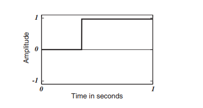

建议技术工人直接看右边的手册，左边的是纯理论解释
转录翻译摘抄自zlibrary-Designing Sound, 翻译自deepL翻译器
本文由小沙盒工作室手动翻译,原文《Designing Sound (Andy Farnell) 》，细节请查看原文，这个是摘抄
声音设计是一个由三个支柱，三个知识体系支持的结构。
首先，我们把声音看作是一种物理现象，看作是材料内部的振动，涉及到能量的交换。这些都是机械学的主题。 材料动力学，振荡器和声学，在第3，4，5章中涉及。 会出现一些方程式，但总的来说是采取定性的方法。
三支柱：物理、数学、心理学
技术和设计 将这三个支持性主题，即物理、数学和感知结合起来。 和知觉，我们在这一部分的最后几章，涉及到了 技术。在这里，我们将检查方法，根据他们的物理基础和我们的经验，解构的声音。这揭示了物理 过程中，与知觉的过程一致。最后，我们将看到如何把 这些分析模型变成具有所需行为的新声音，并看到 如何使用信号处理技术来控制它们。
力是移动能量的尝试，我们写成F。力的单位是牛顿，写成N，所以描述一个10牛顿的力，我们说F= 10N. 在一个水库中，水对大坝施加了巨大的力。但由于 大坝紧紧抓住水，水没有移动，能量也没有变化。水 水对大坝施加了一个力，而大坝对水施加了一个力。这就是 艾萨克-牛顿的第三定律，它说，只要一个物体A对另一个物体B施加一个力，那么B就会对其施加一个力。 另一个物体B上施加一个力，那么B就会以相反的方向对A施加一个相同的力。 A. 当这两个力平衡时，我们说它们处于平衡状态。
当一个力作用在一个表面上时，我们说这个表面承受着压力，写成p，单位是帕斯卡（Pa）。 p，单位为帕斯卡(Pa)1。一帕=1N/m2，所以它是一个力除以一个面积，我们可以说是一个压力。 面积，我们可以说 p = F A (3.1) 1. 以法国物理学家和数学家布莱斯-帕斯卡尔命名。 10 物理声音 对于一个以牛顿为单位的力F和一个以米为单位的面积A的平方。在地球的海平面上 地球上的环境压力始终为101325Pa，称为一个标准大气压。 大气层，所以我们通常测量任何声压相对于这个静止的背景，而不是处理绝对压力。我们不考虑 考虑到压力作用的任何方向，所以它是一个标量，作用于 所有方向
由于能量可以移动，我们可以利用和引导它来做功，我们用W来表示。（法器）（引导）（黄老） 功是一种能量的变化，也以焦耳为单位。所以。 能量的另一个定义是做功的能力。它可以使事物变得 更热，或移动事物，或发射光和无线电波。它可以移动的一种方式是 作为声音，所以声音可以被认为是变化的能量。我们用符号 ∆来表示变化，我们可以用能量的变化来表示功。 下面的公式 W = ∆E 译者补充猜想：功=能量和意志力的变化量（斗法）
功率，以瓦特（W）为单位，是做功的速度。一瓦特等于 与每秒一焦耳（1J/s）相同，或者说每秒有多少能量改变状态 每秒的能量变化。当发出声音时，我们正在以一定的速度将一种能量转换为另一种能量。 在小号或小提琴中，空气的力量或弓箭的运动以一定的速度转换为辐射能量。 在小号或小提琴中，空气的力量或弓的运动被转换为辐射的声能。在一个电子放大器中，有 扬声器中，声音是由电能产生的。一个完美的100W的放大器和扬声器每秒将100J的电能转换为声音。
那么，制造声音的能量来自哪里？小号手胸部的肌肉 小号手的胸部肌肉？小提琴手早餐所吃的食物？大部分的 我们在地球上体验到的能量来自于太阳，还有一小部分 来自于地球内部的物质裂变（铁、硅、铀等重元素的高温液体）。 诸如铁、硅和铀的热液体，在地球上进行缓慢的核反应。 3.1 基本物理学 11 在行星的核心进行缓慢的核反应）。我们听到的每一个声音最终都是由这些能量来源引起的 能量做功。当一根树枝从树上掉下来时，它释放出重力势能。 储存在光合作用中的重力势能。形成树枝的生长 树枝的生长是缓慢的、稳定的对抗重力的工作。现在，其中一些能量 变成了声音，因为木材断裂，树枝坠落。能量是 总是试图从一个高的状态到一个低的状态，而这种移动的倾向 让它变得有用。它从能量高的地方移动到能量较少的地方，或者自由度较大的地方。 能量，或更多的自由度，试图使自己在宇宙中尽可能地分散。 在宇宙中。这被称为热力学的第二定律。
宇宙的某些部分是由物质组成的，是能量的凝结形式。我们 我们是由它组成的，我们生活的星球也是如此。所有的物质都有质量，以公斤为单位。 以公斤为单位，在引力场中具有重量。一般人对物质的 对物质的通常理解是，在一个没有质量的空间内，有质量的不可分割的原子。 没有质量的空间。另一个模型认为它是一个连续的东西，在那里 没有尖锐的边界。两者在某种程度上都是正确的；物质是一种由相连的场组成的海绵状物质，它可以移动并包含能量。但是 单个原子是罕见的东西。在一些材料中，如金属和晶体的原子 挤在一起形成一个晶格。而不是单原子的气体或液体。 我们通常会发现一组原子排列成分子。当几种不同的 我们称它为化合物，例如晶盐是由钠和氯组成的。 它是由钠和氯原子组成的。原子或分子模型是 原子或分子模型非常适合于以简单的方式理解声音，因为它是小质量点之间碰撞的结果。 小质量点之间碰撞的结果。想想台球桌或牛顿的摇篮玩具，想象一下 声音是由一个球转移到另一个球的运动。 宇宙的某些部分是由物质组成的，是能量的浓缩形式。我们 我们是由它组成的，我们生活的星球也是如此。所有的物质都有质量，单位是 所有物质都有质量，以公斤（kg）为单位，在引力场中具有重量。一般人对物质的 对物质的通常理解是，在一个没有质量的空间内，有质量的不可分割的原子。 没有质量的空间。另一个模型认为它是一个连续的东西，在那里 没有尖锐的边界。两者在某种程度上都是正确的；物质是一种由相连的场组成的海绵状物质，它可以移动并包含能量。但是 单个原子是罕见的东西。在一些材料中，如金属和晶体的原子 挤在一起形成一个晶格。而不是单原子的气体或液体。 我们通常会发现一组原子排列成分子。当几种不同的 我们称它为化合物，例如晶盐是由钠和氯组成的。 它是由钠和氯原子组成的。原子或分子模型是 原子或分子模型非常适合于以简单的方式理解声音，因为它是小质量点之间碰撞的结果。 小质量点之间碰撞的结果。想想台球桌或牛顿的摇篮玩具，想象一下 声音是由一个球转移到另一个球的运动。
除非作用在一个质量上的力是平衡的，否则就会发生变化。一个机械力产生运动并做功，W=F×d，距离为d。 我们用米来衡量距离，写成m，但另外两个概念非常重要 但另外两个概念非常重要：距离的变化率称为速度（或更常见的是 速度），以及速度的变化率，称为加速度。速度被赋予 符号v，以米/秒为单位，写作m/s。加速度是 以米/秒为单位，写成ms-2，我们给它的符号是 符号a。 牛顿运动定律是很重要的，因为它们最终解释了空气是如何运动产生声音的。 空气是如何运动而发出声音的。其中最重要的是第二定律。 说明力等于质量乘以加速度，F=ma。不久，我们将看到 我们很快就会看到它是如何产生振荡的，这种运动形式称为简谐运动 这种运动形式称为简谐运动，是许多声音的基础。一牛顿的力将加速1公斤 在1ms-2。其他类型的力是重力（因为它加速了有质量的物体 有质量的物体），磁力和电力（因为它们也能加速物体，使它们移动）。 并导致它们移动）。如果你了解这些基本概念，你就有了 其他与声音有关的物理学基础。
分子位置的微小扰动是产生声音的原因。A 静止点或平衡位置是指一块物质不受任何振动干扰的地方。 任何振动。这就是我们测量的相对位移。物体可以移动的方向的数量 的方向决定了它的自由度。大多数 真实的东西都有三个平移方向（俗称上下、左右、前后），以及三个旋转方向。 下、左和右、向前和向后），以及三个旋转度 运动（俯仰，滚动和偏航），但对于许多声音模型，我们喜欢简化 但对于许多声音模型，我们喜欢简化，例如，想象在一个字符串的点只有一个自由度 自由度。位移是一种距离，所以用米来衡量，（m）。然而。 更严格地说，它是一个矢量，因为位移的方向是重要的
激励 激励点是动力传递给物体的地方。它可以是 在像小提琴弓这样的刮擦运动中，它可以是摩擦性的，或者是冲动性的。 如碰撞时的冲力。一种材料可以被其周围的湍流所激发 或通过突然的物理释放导致运动，如拨动琴弦。 弦。当它断裂或变形时，它可以被自身的内应力所激发。 如加热的钢梁的吱吱声。如果它是由铁磁性金属制成的 一些东西可能被放在磁场中，它将经历一个力。 如一些扬声器的设计或可用于演奏电吉他的电子弓。 电吉他。在强电场中的带电物体可能会发生偏转，如果 如果场强发生变化，带电物体就会偏离，这就是静电扬声器的原理。 但大多数的激励是通过简单的耦合，即来自另一个连接物体的直接力量。 另一个正在振动的连接物体的直接力量。给系统带来能量的东西被称为激励器，而激励器则被称为 系统的东西被称为激励器，而振动的东西被激励。被激发的 的东西可以是一个共振器，这个概念我们很快就会发展。在现实中，由于 牛顿第三定律，激励器和被激励物通常都对声音有贡献，所以这两个物体的性质很重要。锤子的声音 锤子的声音
我们将材料定义为现实世界中发现的任何实用的物质形式。 这可能是玻璃、木材、纸张、岩石或剪刀。它也可以是蒸汽。 水或冰，突出材料的第一个重要属性，即 状态。 3是固体、液体和气体。这些状态反映了物质的方式 是由力量固定在一起的。将所有材料固定在一起的力量被称为 键，其中有几种类型，有些比其他的更强。 在表3.1中，列出了五种类型的键及其强度。作为一个粗略的 作为一种粗略的指导，这些键将所有的物质分成五类，即固体和晶体化学键。 2. 尽管通过巧妙的光谱技术，我们可以分离出每个部分的声音（见Cook 2002, p. 94). 3. 我们避免使用物理学术语相，因为这个词在声音中具有特殊的含义。 3.2 材料 13 高熔点的化合物、金属、低熔点的液态和固态化合物、有机化合物（例如：金属）。 低熔点的液体和固体化合物，油和塑料等有机化合物，以及纤维素和橡胶等大分子化合物。每个分子在空间中都是由一个 表3.1 材料键。 类型 示例 杨氏模量 GPa 共价结晶性固体 200-1000 金属 金属 60-200 离子性 可溶矿物 30-100 氢键 塑料 2-10 范德瓦尔斯 橡胶、木材 1-5 静电结合力的平衡，相互吸引和排斥它的邻居。 它的邻居。牛顿第三定律帮助我们理解为什么这会影响到声音。 每一个动作都有一个相等和相反的反应。写为Fa = -Fb。 这意味着，由于它们是结合在一起的，如果分子A对另一个分子B施加一个力 在另一个分子b上，那么b会在相反的方向提供一个相等的力 来补偿。如果一个分子离它的邻居太远，它就会被拉回来。 会被拉回来，同样，如果两个分子靠得太近，它也会被推开。因此 声音在材料中传播时，会在这个静电结合的结构中引起一连串的移动质量。 这种静电结合的结构。分子质量越近，并且 粘合得越强，声音就越好、越快地穿过东西。 它在钢铁中的移动非常好，而且很快，大约为5000米/秒，因为铁 原子挤在一起，连接得很好。温度会影响 粘合，而声音显然会随着状态的改变而改变，从固体到液体。 然后再变成气体。冰的声音与水截然不同。在二氧化碳气体中 中，远处分子之间的力量相对较弱，我们发现声音 以259米/秒的速度缓慢移动。在118种常见元素中，63种是金属。这 解释了广泛的物理特性，如果我们允许合金的话，就更多了。 大多数金属具有弹性、硬度、密度，并且在声学上具有很好的传导性。
除了质量之外，物质的另一个质量是弹性，它使物质能够储存机械能，并使声音振动成为可能。图3.1中的图表 图3.1阐述了表3.1的内容，显示了一系列材料的弹性。 它有几个名称，有时被称为杨氏模量（E）或体积模量（K）。 或体积模量(K)，或在谈及气体时称为可压缩性。我们 我们将很快看一下这些不同的定义。首先，分子之间的所有力量 分子之间是平衡的，处于平衡状态。如果物质的一个点在空间受到干扰 空间的干扰，它就会改变它与邻居之间的关系。该材料表现为 一个临时的海绵来吸收机械能。增加和减少 吸引力和排斥力的增加和减少，然后作用于将排列重新拉回到 平衡。当物质恢复到它的原始配置时，一切移动到它的静止点，所有持有的能量被释放，材料 被说成是恢复了。 更常见的是，我们谈论材料的刚度（k），它取决于E和物体的尺寸。 它取决于E和物体的尺寸。刚度是指一根材料的杆子在弹性条件下移动的距离（应变）。 材料在给定的力（应力）作用下弹性移动的距离。对于相等的形状，一个像钢或钻石这样的刚性材料 坚硬的材料，如钢或钻石，具有较高的E值，在大的力作用下只发生一点变形。 而像橡胶这样的柔性材料，其E值较低，容易拉伸。 E值较低，容易拉伸。要算出绳子或杆子的刚度，我们使用 k = AE l (3.3) 其中A是横截面积，l是总长度。刚度是以每米牛顿为单位的，所以如果一个力施加在一个材料上，它移动了 x米，那么 k = F x (3.4) 工程师在设计机器或建筑物时，结合这两个方程式来预测运动和载荷。 设计机器或建筑物时，将这两个公式结合起来预测运动和载荷，但我们也可以用这些公式来寻找刚度。 3.2 材料 15 用于计算声音频率。当然，并不是所有的东西都是绳子 或细棒。对于三维物体，我们可能还想知道体积模量K。 模量K，即在一定的压力下，一体积的材料会减少多少 压力的情况下减少多少。为了得到体积模量，我们还需要一个信息，即材料的 "压缩性"。 材料的 "压缩性"。如果你把橡皮筋拉长，它在中间会变薄。 如果你拉伸橡皮筋，它的中间会变薄，或者如果你压下一块造型泥，它就会变胖。 你把它压扁了。这种压迫感被称为泊松比ν，常见材料的一些数值见图3。 图3.2给出了常见材料的一些数值。在泊松比ν和 0 0.1 0.2 0.3 0.4 0.5 0.6 材料 泊松比 0.18 0.3 混凝土 0.20 - 0.25 玻璃/陶瓷 铁 0.21 - 0.26 铝 0.33 0.30 铜、钢 0.33 土壤，粘土 0.45 黄铜 0.28 - 0.30 橡胶 0.5 0.2 沙、砾石、松土 0.52 铅 0.42 不锈钢 0.32 木材，松树 0.308 塑料，尼龙，PVA 0.35 - 0.4 钻石 0.1 铍 0.07 图3.2 一些常见材料的泊松比（挤压系数）（无单位）。 根据杨氏模量E，你可以计算出体积模量K为 K = E 3(1 - 2ν) (3.5) 当我们计算材料中的声速时，这一点会很方便。 材料中的声速时，这将会很方便。
一种材料的密度是指其质量点挤在一起的紧密程度。A 小体积中的大质量具有很高的密度，如钻石。同样的质量 分散在较大的体积中，如木炭，具有较低的密度，尽管 16 物理声音 0 2000 4000 6000 8000 10000 材料 密度（公斤/立方米） 4000 10000 木材 200 - 500 水=1000 砖、水泥、岩石 金属 1500 土 2500 塑料 30 - 120 气体 小于 3 2000 5000 氧气 1.45 铍 1.85 奶油馅饼 10 蓬松的枕头 50 苹果 641 木质树皮 240 石膏 849 干粘土 1073 纸张 1201 玻璃 1500 橡胶轮胎 1522 干沙 1603 红砖 1922 石灰石 2611 大理石 2563 钛 4500 黄铜 8500 铀18900 图3.3 一些常见材料的密度×1kg/m3。 这些是相同的元素，碳。密度ρ是质量m（公斤）除以体积V（立方米）。 除以体积V（立方米），所以 ρ = m/V (3.6) 以每立方米公斤为单位（kg/m3）。
当一个点以弹性方式储存能量时，能量是可以恢复的，并且它被储存在 在一个力中。如果一个材料以塑性方式移动，或屈服，则没有能量被储存。 能量被转化为热量。塑性是与弹性相反的。 塑性材料有一些点不会回到它们的原始位置，并且 相对移动后，它们保持变形。这种材料吸收 声音和抑制振动。当你搭起一排多米诺骨牌，并推倒 终端的时候，就会产生连锁反应。每张多米诺骨牌都会落到它的邻居身上，而邻居又会推到下一个邻居，如此循环。这种能量的运动 是一个很好的非弹性能量转移的近似值。在整个事件发生后 发生后，当一切都恢复原状时，一个物理结构已经被永久地移动或变形了。像这样的材料被说成是塑料的。许多 许多材料都是热塑性塑料，当它们软化并变得更加可塑。 3.3 波浪 17 热。从冰箱中取出的蜡烛在掉落时的声音就像一根木头或金属棒。 的声音，而温暖软化的蜡烛则发出沉闷的砰砰声。其他 热固性材料会随着温度的升高而变硬，变得更有弹性。
材料可能有许多层次的结构。我们可以在金属和玻璃中看到规则的晶体结构 金属和玻璃的结构，或石墨或粘土的混乱和分散的结构。 或粘土中的混乱分散结构。复杂的结构也是存在的，例如在木材中发现的那些纤维状的 在木材中，纤维素股被编织成含有空气或水分的容器。在 在原子和微观结构层面，金属是相当均匀的，而木材则不然。 不一样。玻璃或瓷器属于这两者之间。同质结构。 在这种结构中，材料的每一点都与所有其他的一点大体相同，倾向于提供更纯净的音调。 比起异质结构，即材料是由许多不同的位子混合而成的，更容易产生纯净的音调。 由许多不同的位子混合而成。纤维素作为玉米淀粉在水中，如面团 或奶油冻，比同样数量的纤维素排列在一起的弹性要小得多。 作为木材。这里的区别是材料强度。弹性只有在以下情况下才起作用 弹性只有在键不被拉得太长的情况下才起作用，这受两件事的制约。一个是恒定系数 为每一种材料。这个常数没有单位，是一个比率，一个非基本单位。 单位，由弹性和塑性的两种模式，即压缩和拉伸组成。另一个是温度，它改变了强度。由于大多数东西 都是热塑性的，它们随着温度的升高而失去强度。一种材料，可以 裂缝、分裂或变形的材料会永久性地改变其结构。比如说塑性。 如果材料破裂，任何弹性能量都会随着潜在的振动而丧失。 振动。如果一种材料是硬的，如钻石或铍，其结合可能是如此的 强，以至于声音的传播速度非常快；就像整个结构一起移动一样。 一起移动。
我们以抽象的方式谈论声音已经有一段时间了，但从来没有 暗示它的真实性质。现在是时候仔细研究一下什么是声音了 真的是什么。把能量从一个地方带到另一个地方的东西被称为 波，它们通过介质的传播而移动。介质，它 是空间中两点之间的任何介入材料。 波浪是想象出来的东西。观察一个水池的表面，当波浪在其上移动时。 水不会以波浪的速度移动，它只是上升和下降。 跌。介质的局部或瞬时速度与波的速度不同。 波的速度不同。波浪是另一种东西，不那么有形；它是一种向外扩散的变化模式。 向外扩散的变化模式
如果一个波是虚的，我们如何感知它？我们不能直接看到力或加速度；它们的存在是为了帮助我们理解事物。然而，我们可以清楚地看到 并通过某物的位置来测量位移，比如说当水 物理声音 水在池塘上泛起涟漪。为了帮助我们直观地了解波浪，我们创建了假想的点作为一种 数学工具。由于原子或分子太小，我们无法实际思考。 由于原子或分子太小，我们无法实际考虑，所以振动的东西的模型需要更少的点，每个点代表更多的物质。 更多的物质。它们不占大小，但有质量，我们把它们排列成 离散的空间、平面或由键连接的点的线。通过思考 这些假想的点的运动，我们可以更容易地理解波。
让我们回到我们的弹性材料的数学模型，作为三维空间中的点和键的格子 在三维空间中的点和键的数学模型，就像那些用于化学中的彩色球和弹簧模型一样 分子的数学模型。这是对物质行为方式的一种近似描述，以一种 蹦蹦跳跳、摇摇晃晃的方式。所有引起振动的力都可以分解为 一个更简单的力的总和。有些是推力，有些是拉力。 作用方式相反。有些是扭曲的力，有相反的力，以相反的方式旋转 另一个方向。在一个振动体中，它们都处于一种动态平衡的状态。在这种平衡状态下，能量在两种状态之间来回移动。 状态，一个是势能，或力，一个是动能，即空间运动或速度。 在空间或速度上的运动。振动是一种暂时的动态平衡。 其中存在着能量的平等分配。这意味着能量处于一种双稳态 状态，交替以两种形式之一，即力或运动。 激发后 每个点都试图达到它的平衡位置，在那里它感到最安稳 在被一些干扰物移开后，它感到最平静。在它最终 在它最终回到它的原点之前，当声音停止时，它围绕着它的 围绕它的静止点移动，以运动换取力量。这些振动就是制造 声音。我们听到的振动来自物体的外表面，那些与空气接触的振动 与空气的接触。图3.4显示的是一个位移点的运动情况 随着时间的推移（在图中向下）。请注意，作用在与位移方向相反的力 与位移方向相反 在另一个固体边界的横向（固体弯曲）波行为
因此，如果我们施加一个力，使一个点移位，使它相对于它周围的点移动 的周围，其他的点很快就会与被移位的点成一直线，要么被吸入移位后留下的空间，要么被移位后的点向前推。 被吸引到位移后留下的空间里，或者被它前面的压力推到前面去。 吸引到位移点后面的空间里，或者被它前面的压力推到前面。反过来，它们又对其邻近的点施加了一个力。 在空间中推或拉它们。这种效应在整个介质中传播 介质中传播，使其路径上的所有其他点进入振动。在 在一个无边界的介质中，波永远向外传播。在一个有限的振动固体中，由于边界条件的存在，我们很快就会看到，声音会在材料中反弹 在材料周围反弹，就像水池中的涟漪。这个移动的波阵的效果是 波，而移动振动的时间模式被称为波形。在 称为压缩，反之，在一个区域，它们比平时更分散，称为稀疏。 稀疏。气体中的声波是纵向的，这意味着物质点的运动是向前和向后的。 物质点在传播的同一方向上向前和向后移动。为了直观地了解纵向传播的情况，可以拿着一个长的玩具弹簧的一端，把它向前和向后推。 并将其向前和向后推。它模拟了一种弹性介质，如一种气体。被压缩的点向外推，试图将有弹性的 介质恢复到其原来的位置。由于更多的压缩波到达了 波面的后面，它倾向于向前移动，进入阻力最小的区域 介质处于均匀密度的地方，或者它有最大自由度的地方。 自由度最大的地方。波的这种前向运动就是传播。 在位移的峰值处，介质是不移动的。现在，材料的弹性 材料的弹性开始起作用。它使这些点向它们的原始位置弯曲 位置。波所带的力等于材料的恢复力。 材料的恢复力。当恢复力把它们拉回来的时候，被移开的点在相反的方向上移动得非常快。 迅速向相反的方向移动，它们会超过它们原来的位置。其中 复原力与位移成反比，那么我们就会得到 简单的谐波运动，因为位移部分围绕其静止点来回摆动。 它的静止点。
有几种由运动方向决定的波。正如我们刚刚看到的 我们刚刚看到，纵向波使介质在与波的运动相同的轴线上发生位移。 波的运动。还有一种横波，它的运动方向与介质的位移方向垂直。横向波就像在水面上看到的那些 4横波的传播很容易看到，如果你抓住一根绳子的一端，就可以看到横波的传播。 横向波的传播很容易看到，如果你抓住一根绳子的一端并摇晃它：波从位移点向绳子的一端移动 波从位移点向静止的弦的一端移动。而声波 在空气中传播的声波是纵向传播的，而振动的固体，如钟或板，可能有两种传播方式。 像钟或板可能有纵向或横向的波发生。还有第三种，扭曲的波。为了描述扭曲或扭转 想象一下旋转的绳梯。每当我们谈论声波在 空气或其他流体中的声波，在声学背景下，我们指的是纵向位移 波。当我们谈论固体中的振动时，我们可以指横向的 波或纵向波
对这个术语要小心，因为有许多单位用于引用振幅和 至少有两种经常令人困惑的变化。一个波的振幅是一个在某一点上测量的 量。通常我们用米来测量位移。但我们 可以选择测量任何属性，如压力或速度。在所有情况下，它 都有相对于静止点的负数和正数。对于声波 正值对应于介质的压缩，负值对应于稀薄。 负值对应于稀疏。常规振幅是在零和峰值位移之间测量的。 和峰值位移之间。波的最正和最 波的最正和最负的位移之间的差异被称为范围，或峰到峰的振幅 并且是常规振幅的两倍
波的速度通常被认为是在声音事件的生命周期内是恒定的 在同一材料中的速度。在空气中，声波的传播速度约为340m/s，在液体中更快，在固体中更快。 液体中更快，而在固体中更快。所以，作为一种简化，所有的波在均匀的材料中都有一个 在均匀的材料中，所有的波都有一个固定的速度，这个速度只取决于材料的特性，其符号为c。 符号为c。 在不同的材料之间或在温度变化时，波的速度可能会改变。在罕见的极端情况下，如 爆炸和超音速轰鸣，以及在小范围内所有真实（非理想）的 材料，这不是完全正确的，但它是足够准确的大多数声音 工程。更深入的物理分析表明，c还略微取决于 振幅。我们可以从以下方面计算出特定材料中的声速 弹性和密度。这个公式对固体很有效，对橡胶和液体则稍逊一筹。 对于气体，我们需要增加一个额外的部分来考虑到 对于气体，我们需要增加一个额外的部分，以考虑到压缩气体会使其加热的事实。我不会在这里给出这个公式，只给出 一般的公式，该公式适用于固体。一个很好的近似值。 c = 根号K/ρ
为了证明这一点，让我们在一些数字上尝试一下。我们将使用钢，因为它的 因为它的特性是有据可查的，而且它是一种常见的材料，在健全的 设计实例中常见的材料。我们还将假设，我们希望速度在一个大体积的 钢的速度，而不是一个薄的棒或线。对于一个薄的固体，我们将直接使用 硬度，但对于一个体积，我们首先需要找到体积弹性模量。 钢的杨氏模量 = 200 × 109N/m2 钢的密度=7900kg/m3 钢的泊松比 = 0.3
早些时候，我把波描述为一种 "想象的 "东西，我们已经看到，通过 我们已经看到，通过传播，小粒子可以在介质中传递力量。这导致 这就导致了对速度和速率这两个词的有趣且有时含糊的使用。 当考虑到点或粒子的运动时，我们有时会对粒子的运动速度感兴趣。 对一个粒子在任何瞬间的运动速度感兴趣。我们称其为粒子速度。我们很快就会看到，这决定了粘性损失的大小。 在图3.6中，粒子的速度显示为浅色的点，它上下移动。 5 一会儿，粒子的速度很大，而且在一个方向上，一会儿又是零，然后又在一个方向上。 粒子的速度在某一时刻是大的，而且在一个方向上，接下来是零，然后是负的，以此类推。粒子的速度在每个周期内有两次为零 每个周期。如果振幅增加，你可以看到每个周期所走的距离更大。 周期更大，所以最大的粒子速度会增加。所以，最大 粒子速度取决于频率和振幅。
其他时候，我们感兴趣的是波在介质中的传播速度。 介质中传播的速度，正如前面所计算的那样。为了将其与粒子速度区分开来 速度，我们称之为相位速度。它是波形移动的速度 移动的速度。在图3.6中，一个波在三个时间点上经过一个静止的观察者，（t1, 5. 为了使图表清晰，我把它显示为一个横波，但实际上它有一个纵向的 相位速度与波的运动在同一轴上。 3.3 波 23 t2, t3）。传播的相位速度由深色的点表示，它在沿途跟随一些特征（在同一相位）。当谈论到 音速 "时，我们总是在谈论相位（波）速度。 另一种波速被称为群速度，它是能量传播的速度。 是能量传播的速度。对于大多数声学情况，相位和群速 速度是相等的。群速度是一个常数，取决于介质的特性。 介质的特性。池塘上的波纹显示了这种效果。在一个扰动之后，一组 波会向外传播，但在群内我们看到单个波似乎比群的速度快，出现在群的后面 向前移动，并在前缘消失。有时，当 有时，当波群和相位速度不完全相同时，我们会看到一个波在传播过程中出现扭曲。 传播。在这种情况下，我们说介质是色散的，因为传播速度取决于频率，所以一个包含几个频率的波将 所以一个包含几个频率的波会随着其组成部分的相位关系的改变而改变形状（Graff 1991, p.59）。 这方面的一个例子是，当水波冲到海滩上时，可以看到。相位速度 相位速度试图比群速度更快地向前移动，所以 波浪在自己身上卷起
由于波在空间传播一段距离需要时间，这就引入了一个 在空间的不同位置测量的波的周期之间的延迟。事实上。 这就是我们如何能够定位声音的来源，因为来自一个振动物体的波 振动的物体在不同的时间到达每个耳朵。由于波的传播 我们有时会以一种类似的方式来谈论空间和时间。 这使我们想到了波长的概念。从字面上看，这是一个衡量 波的长度，以米为单位，它是在最近的两点之间测量的。 在同一方向移动的相同位移的最近两点之间测量。我们给波长的符号是 符号 "lambda"，写成λ。运动波的一个波长也显示在 图3.6中
某个点的运动，被移位，通过其静止点返回。 过度运动，然后再次回到它的静止点，这是一个周期。 一个周期，而完成这个周期的时间是以秒为单位的周期（T）。 同样的事情，以每秒发生的次数来衡量，就是频率。 的倒数，就是频率（f）。周期和频率的关系为 f=1/T，f的单位是赫兹（Hz）。
正如你可能已经发现的那样，速度、波长和频率的概念都是由一个方程连接的。我们可以根据频率和波长计算出相位速度 (声速)，其计算方法是: c = fλ (3.9) 在我们知道速度和频率的情况下，为了得到波长，我们可以使用。 λ = c/f (3.10) 24 物理声音 当然，通过最后的重排，我们可以得到频率，其中我们知道c 和λ的情况下，就可以得到频率。 f = c/λ (3.11) 在空气中的可听波长范围是：高频率的20毫米，低频率的17米。 到最低的17米。c的实际范围从重气体的100m/s到 铍中的12.8km/s。
传统按钮合成器 2*180 区间:[-180,+180]左右各一半
特殊旋钮合成器 区间:[0-360]
如果你在环岛上开车，绕着圈行驶，那么绕到一半时 你就会向相反的方向移动，即180◦。要消除这个方向的改变 方向的改变，最好的办法是继续转圈，直到你走完了 360◦。我们可以用知觉参照系来理解 绝对关系的区别，比如从这里到邮局的距离。 邮局，和一个相对的参照系，如 "半满"。阶段可以描述 一个事物与自身的关系（如上下颠倒或前后颠倒）。它描述了一个 它描述了一个相对于早期方向的方向。所有的相位都是圆形或 包裹的，所以如果你在一个方向上走得足够远，你就会回到你的 开始的地方。作为一个真正的波的属性，相位最好被认为是一个参考点，一个不移动的波的快照，和一个移动的波之间的关系。 一个移动的波。或者，作为同一个波的两个相同的副本之间的关系 波在时间上的分离。当两个波完全匹配，并且都有正峰、负峰和零点重合时，我们说它们是同相的。 当一个波的阳性部分与另一个波的阴性部分重合时 相同的时候，我们说这两个波是不相位的，或者说相位是倒置的。 相位可以用度数测量，也可以用弧度测量。再看一下图3.4 并注意到加速度与速度相位相差90°。 速度与加速度相差90度，这是由速度和加速度的公式得出的。 力和质量的公式。
叠加是将波加在一起。在某个时间点或空间点上，由两个波相加而产生的新波的振幅 通过在某个时间点或空间点上将另外两个波相加而产生的新波的振幅是 它们各自的振幅之和。两个频率相同的波 具有相同的相位，完全匹配。它们在叠加时将相互加强，而两个相位相反的波将相互抵消。如果两个 如果两个波的方向相反，如图3.7所示，并在某个点上相遇，它们就会相互干扰。 某个点相遇，它们就会相互干扰。相互干扰是它们在空间中相交的那个点的局部现象。 它们在空间中的交叉点。在这一瞬间，它们彼此相加，并且 如果两个波的振幅Aa和Ab各为1毫米，那么当它们的波峰 重合时，将出现Aa+Ab=2mm的峰值。此后，它们继续 继续它们的旅程，好像什么都没有发生过。现在，这似乎是反直觉的，因为如果这两个波的相位相反呢？难道它们不会 互相抵消和破坏吗？好吧，有那么一瞬间，它们确实如此，但只在 在那之后，这两个波就会正常地进行下去。 这是因为波携带的能量是一个标量，所以无论它们的方向或相位如何 它们的方向或相位，每个都包含一个正的能量。如果它们是能够相互湮灭，那么能量就会被破坏，这是不可能的。所以，叠加是一种局部现象。你可以在图3.7的右图中看到这一点。 图3.7的右框中可以看到这一点，它显示了由两个附近的源以相同频率振动所产生的干扰模式 它显示了附近两个以相同频率振动的源所产生的干扰模式。每个人都在发送波，其中的 明亮的圆圈对应的是正振幅（压缩），而黑暗的圆圈则代表负振幅（压缩）。 圆圈代表负振幅（稀疏）。对于任何给定的频率 和传播速度，都会有一个固定的亮点和暗点的模式。 的模式，在这个模式中，波在局部会相互加强或抵消。你可以听到这一点 如果你设置一对扬声器来播放一个恒定的低正弦波，大约在 80赫兹。把你的头从一边移到另一边，你会听到有一些地方 声音似乎比其他地方更响亮。如果你把一个通道的相位反转 将有一个点正好在扬声器的中间，声音会变成 零
边界是指在波的路径上的任何材料或材料特性的变化。 波。它可以是一个振动的木块的表面，在这种情况下，介质是木头，边界材料是空气。 介质是木头，而边界材料是空气，或者它可以是一堵墙。 洞穴，在这种情况下，介质是空气，边界是岩石。有三种情况 边界会发生三种情况，这取决于介质和边界材料之间的差异。 和边界材料之间的差异。这种差异可以概括为边界 模量，是两种材料的弹性和密度的比率。模量 是1，当两种材料相同时。在这种情况下，不会发生反射。 当两种介质差别很大时，如水和空气，很大一部分声音被反射，只有很少的声音被传播。对于水和 对于水和空气来说，这大约是99%；因此，水面上的声音并不能真正穿透到水面下。 因此，水面上的声音并不能真正穿透水面下，而水下的声音在上面的空气中也非常安静。此外，人们还发现 发现入射角可以影响反射波的强度。对于 对于光和声波来说，一个非常尖锐的角度，即布鲁斯特角，可能会导致反射的突然消失。 反射突然消失（见Elmore and Heald 1969, p. 159）。 当考虑在边界发生的变化时，我们需要明确 我们是在谈论波粒的速度、位移还是压力，以及 我们是在考虑固体中的横向弯曲波还是纵向的 声压波，因为它们有不同的行为
对于固体中的弯曲振动，如果边界是一种坚硬和致密的材料 那么波会被反射回来，但其相位是倒置的（图3.8）。如果 边界是一种致密但有弹性的材料，那么波就会被反射回来，但其相位是相反的。 牛顿第三定律解释了这一点。波碰到边界的那一点会受到一个力的作用，但如果它不能移动，就会对该点的波介质施加一个相等但相反的力。 在这一点上对波的介质施加一个相等但相反的力。边界处的位移是 零。这将导致一个新的波出现，但它的方向和相位是相反的。 和相反的相位。在一个灵活的固体材料中，边界与介质一起移动。 介质移动。它吸收了来自波的力并将其作为势能储存起来。
一个介质到另一个介质，声音也是如此。图3.10中的折射波符合 斯涅尔定律，反射角和入射角的正弦值与每种介质中的速度之比相同。 与每种介质中的速度之比。与光不同的是，低频的声音具有较大的 波长。只要声音的波长与边界大小相比是小的，这些规则就成立。 边界大小相比，这些规则是正确的，但如果边界很小或波长很大，效果就会改变。 波长大，效果就会改变。当声音被障碍物遮挡时，我们会听到这种声音。 我们会听到这样的声音，一些频率在它周围通过，而另一些则被阻止。 所有这些现象都将变得很重要，因为我们将考虑驻波 和模式、混响和空间声学时，所有这些现象都会变得很重要。
一个声音可能跨越许多界限，从能量和兴奋的来源 到我们听到它。具有不同性质的材料之间存在着接口，如吉他的琴桥上的两种木材。有些联接是 物理上连接良好，但其他的可能是不太明显的，长距离的，松散的。 或暂时性的联接。它们构成了一个链条的一部分，其中每个环节都会导致 其他的振动。作为一个后来的实际例子，一个涉及大量耦合的设计工作 耦合的设计工作是车辆的声音。单独的发动机并不是汽车的声音 汽车的声音。为了正确地模拟整个汽车的声音，我们还必须涉及到排气管、变速箱的声音、车身的共振以及许多其他方面。 管、传动系统的噪音、车身共振和许多其他因素。为了管理 这种复杂性，每个部分都必须作为一个独立的对象，在一个连接的 整体。松散的耦合可能是不连续的，例如当两个酒杯 被带到一起。我们可以从两个方面来看待这个问题，要么作为一个非线性的 耦合或作为一个独特的新激发源（通常发生在 驱动源的频率）。
反射波会遇到在相反方向上传播的其他波前，并与之发生干扰。 并与之发生干涉。这两个波是相互加强 还是相互抵消，取决于它们的相对相位和频率。如果一个 恰好在另一个物体的两边之间反弹，使其波长或它的某个倍数达到 它的波长，或它的某个倍数，与反射之间的距离相同，就会产生驻波。 反射的距离相同，就会产生驻波。一个驻波最好被看作是两个 驻波最好被看作是两个向相反方向传播的波，它们的压缩和稀疏作用 相互加强。驻波取决于一个振动物体的几何形状。 物体的几何形状。一定的长度会促使波在一定的频率上出现，共振或模式就会出现。因为大多数真实的物体并不规则。 许多不同的频率在一个复杂的动态过程中结合起来。声音振动的模式 从一个物体中出现的声音振动模式是由这些共振组成的。 在材料中反弹的波。
摘要：十字路口，主干道，意识波畅通无阻，绕弯之后，波变弱，受干扰
驻波模式倾向于物体的最低能量振动模式，即那些以最小的能量输入获得最高振幅的模式。 驻波模式倾向于物体能量最低的振动模式，即那些以最小的能量输入获得最高振幅的振动模式。 这是一个很难描述的动态过程，不需要大量的数学计算，所以 让我们使用比喻。想象一下，在一个繁忙的购物日里，波浪就好像是市中心的人一样 在一个繁忙的购物日里。清晨时分，只有几个人 只有几个人，只有主要的大街上有人。到了下午 下午时分，小镇上人潮涌动，游客们分散到小街上，去参观更多不知名的商店。 逛一些不知名的商店，或到彼此的家里去。一些游客 迷路了，沿着小街走了一些不可能的路线。这类似于模式。 或声波在物体形状中遵循的路径。 物体中的能量越多 物体的能量越大，探索的自由度就越多。有些自由度有更高的 概率比其他的高。主干道是最容易的路径。我们称其为 主要模式。它是声能容易移动的路径，可以创造物体的基本频率。 创造物体的基本频率。其他较小的商业街 街道形成二级和三级路径。这些对应于声音中的其他频率。一个能量波走二级或更高路径的可能性 更高的路径是与声音的能量大小有关的。如果它含有大量的能量 那么波就会分散开来使用所有的路径。接近傍晚时分，游客离开 城镇（一些波变成了热量，另一些则以声音的形式辐射出来）。旁门左道空无一人。 小街空荡荡的，生活主要回到了高街。这对应的是 这与声音中的能量通过阻尼或辐射衰减是一致的。能量可以 能量可以从三级和二级模式下移，回到基音中去 直到最后，它是唯一剩下的强谐波。驻波的形状可以 当我们用沙粒或频闪灯来显示它们时，在一些物体中可以清楚地看到驻波的形状。 揭示它们。图3.11显示的是鼓皮的一些模式（因为它是一个有趣的示范）。 一个有趣的演示），从技术上讲，在圆周上夹着一个圆形膜的 周边夹住的圆形膜。主要的，表示为0:0，被称为 "伞状 "模式，其中 中间上下移动。它对应的是一个半波长被困在 在圆的范围内。其他模式被赋予数字来区分 它们，如1:2，第一个圆形模式加上第二个直径模式。所有 振动的物体，如钟、弦或飞机机翼，都可以用模态来分析。 模态的分析。模态取决于材料和其中的声速，以及物体的形状。 物体的形状
如果你把一张薄薄的纸条或头发靠近一个以低频率振动的扬声器，它将显示出空气分子的位移。 它将显示空气分子的位移。惠斯通 1827年，惠斯通设计了一种使声波可见的方法，他的 "千里镜 "是一根金属棒，上面有一个小镜子。 金属棒的末端有一个小的镜面珠子。有了它，他可以看到声波 声波作为光的利萨裘斯模式。他是在继承Chladni的工作。 他通过把沙子放在平板上来研究平板的振动。视觉化的一种方法 纵向驻波的一种方法，这是Kundt所做的一个实验，经常在学校物理课上使用。 在学校物理课上经常使用的一种方法是，在管子里放一些细沙，使其成串显示出高低不平。 在管子里放一些细沙，使其聚集起来，显示出高压和低压点。Buckminster Fuller和 汉斯-詹尼发现，涂在表面的湿染料可以排列成 形成图案，揭示了球体和立方体等固体中的驻波。 使用频闪灯，我们可以拍摄振动的照片或电影，就像它们在慢动作中一样。 处于慢动作状态。被高频声场激发的水滴 揭示了它们不同的球面模式。
如果我们有几个由不同材料制成的鼓或钟，并且能够将它们放在一起听。 如果我们有几个由不同材料制成的鼓或钟，并能够一起听它们，我们会很快得出结论，即 有一些关于声音的东西，更多的是由形状而不是材料决定的。 使它们具有相似的特性。有些东西使它们成为鼓和 钟，而不是木板或瓶子。换句话说，我们能够听到形状。 因为它决定了长度、边界之间的距离，以及模态路径。 3.4 边界 31 材料内部和沿其表面的模态路径。它影响到频率的建立和衰减的方式 它影响到频率的积累和衰减，以及哪些频率在物体振动时将是最强的。 振动时哪个频率最强。
声音可以被看作是能量生命中的一个阶段，因为它在做功，并向熵移动。 走向熵。熵随着能量的扩散和寻求更多的自由而增加。它并没有被摧毁，但它已经被我们失去了；它变得随意 或无序的，无法做功。这就是背景热。热量仍然可以 如果我们有另一个温度较低的身体，热仍然可以做工作，所以热的物体可能 在冷却时发出声音。热量也像水或电一样从高电位流向低电位。 势流向低势。在这个伟大的计划中，宇宙似乎像一个时钟 运转起来。当宇宙达到其最大规模时，所有存在的能量 将处于这种最大的熵状态，处于尽可能低的温度，一切都将停止。在那之前，总有一些事情是值得高兴的 因为有大量处于高电位的能量袋，因此 能量流动、工作、声音和生命的可能性
到目前为止，我们考虑的是一个完美的系统，在这个系统中，能量总是在动能和势能之间进行交换。 在动能和势能之间交换。在这样一个系统中，一个物体的振动 将永远这样做，而波将传播到永恒。真实的宇宙不是这样的。 真实的宇宙不是这样的，因为有熵。在图3.12中，你看到我们 熟悉的质量和弹簧对，代表着一个材料点和一个弹性 结合。但是有一个新的元素连接到质量上。它代表一个阻尼器。 或一个机械阻力。这根棒子应该是一个活塞，它与下面的粗糙材料摩擦，从而产生摩擦。 下面的粗糙材料，从而发生摩擦。 弹簧和阻尼器都将质量连接到一个固定的参考点上，而质量在短暂的运动中被设定为运动。 质量像以前一样以一个短暂的力被设置为运动。而不是向后摆动 F m m m m 施加的力 位移 时间 图3.12 机械系统中的损失。 32 物理声音 每一次偏移的振幅都会永远衰减。阻尼器 本身代表了所有真实材料的损耗成分。正如我们已经研究过的 正如我们已经研究过的，能量从来没有真正的损失；它在做功时变得无用，而且 虽然我们称之为损失，但声能实际上变成了热量。如果你演奏一种 如果你玩小号或大提琴等乐器，你可能已经知道，当任何物体发出声音时 任何物体发出的声音都会变热。为了量化这一点，我们注意到 摩擦和损失与粒子速度成正比：质量移动得越快 它失去的能量就越多
你听说过模拟合成器和模拟电子设备，甚至可能听说过 模拟计算机。但这个词是什么意思？从它的希腊语起源anamean意为朝向或在，而logos意为推理或逻辑，模拟就是 是一种推理或系统的方法。在现代使用中，它意味着一个连续测量的系统。 但它的重要内涵是类比的意思。 它的重要内涵是类比，即通过对其他类似的系统进行推理，这些系统具有我们想要描述的特征。 想描述的特征。模拟电子学的根基来自于1920年的控制论和计算机的早期时代。 在1920年至1950年期间，控制论和计算机的早期阶段，当时电路是作为机械系统的类比而建立的。 作为机械系统的模拟。我们有可能对振动系统进行电气、机械和声学模拟。一个类似的系统将有 方程的形式相同，但数量不同。这并不限于 这并不局限于力学、声学和电子学，也适用于化学、静电、社会和经济方程，当然，这些方程与当前的任务并不直接相关。 当然，这与当前的任务并不直接相关。 我们现在要考虑三个物理系统：机械、电子和声学。所有这些都与声音设计有关，你会在后面的练习中看到 实践练习，但真正的原因是深入研究这些主题，在一个 一下子就可以看出所有的力量和行为之间的联系。要注意的是 有两个版本的电-声-机械类比，其中的角色 变量的交换。下面这个系统，称为力-电压或流动性 类比，用于网络分析，其中物理声音是一个案例
所有系统都需要有做功的潜力，能量在某种状态下可以流动。 可以流动。一个例子是将水提高到海平面以上，通过筑坝发电。 通过筑坝发电。重力势能（mgh）存在的原因是 质量m存在于重力场(g)中，在最低电位以上的某个高度(h) 势。在流体动力学中，这是指压缩气体中的任何压力或弹性势能状态。 压缩气体中的任何压力或弹性势。在电子学中，它是由电池中的电荷保持的电势。 在电子学中，它是由电池中的电荷保持的电势，是两个导体之间的电位差，单位为 伏特（V）。在机械学中，它是一种储存的力，如上了发条的弹簧，或一种动力源，如人的身体。 动力源，如人在机器上工作。
我们的网络系统还应该包括某种潜能流动的入口。在钢琴中，琴弦被一个携带动能的锤子所激发。 在撞击过程中，能量入口与系统的其他部分短暂地耦合，然后与之断开。 然后与之断开，而在摩擦和湍流激励中，进气口 耦合是持续的
水库中的水的潜力使其在释放时移动。因此，流动导致了 势的变化。在电学上，这就是电流I，电子在电线上的流动。 的流动。在机械上它是速度，在声学上它是体积电流，单位是每秒立方米。 立方米/秒。当一个东西在流动时，它携带着能量，这意味着它不愿意去做。 这意味着它不愿意开始或停止运动，除非有一些能量被投入或取出。 它或取出一些能量。在力学中，质量是一个与电感（L）相类似的电学量。 电感（L），而对于声音，我们有一个量（M），称为惰性。 惰性是运动介质的质量除以波前的横截面积。 波面的横截面积。图3.13中显示了三个网络元素。电气 元件是一个线圈，它通过它来感应电流。机械 机械元件是一个质量，它可以通过速度携带能量。 声学元件是一个开放的管子，当波在其中移动时，它能携带声能的流动。 声波元件是一个开放的管子，当波在它里面移动时，它携带着声能流。
吉他的琴桥将琴弦与音板连接起来，小号的喇叭也是如此。 小号的喇叭，都是有意为之的装置，目的是把一些振动的能量从系统中带走并辐射出去。这些装置的行为类似于电阻。 因为发生了损失（能量被带出系统到其他地方）。
(59页)这是一个物体暂时储存一些能量的倾向，导致 一个局部的电位。与电池或其他电势源不同的是，电容是开放的，所以它能尽快释放任何积累的能量。 是开放的，所以它能尽快释放任何累积的能量。在电气术语中，电容（C）以法拉（F）为单位，是指在两块板上保持电荷的能力。 电荷的能力。电网符号反映了这一点。在机械方面。 电容是一个弹簧，我们很快就会详细研究它。它是 是一种因其弹性而储存机械能的元素。机械电容 电容是刚度的倒数，1/k，我们称之为顺应性。 以米/牛顿计算。在声学方面，电容是一种质量 它反对施加压力的任何变化。介质的连接体积越大，其声学电容越大。网络符号是 网络符号被画成一个与水流相连的水库或容器，并被写成Ca，也就是 "电容"。 声学 机械 电气 图3.15 电容。 单位：米/牛顿。它可以从密度ρ，传播速度 c和体积V计算，Ca = V /ρc 2。
把这些元素结合起来，让我们构建一个模拟系统的例子。在图3.16中，我们看到了敲击琴弦的电气和机械元素。 弦。这可以被认为是一个质量、弹簧和阻尼器的有限阵列 (或电容、电感和电阻）的有限阵列，由能量的爆发来激发 C = 锤子 开关 = 触点 发声板 绳子 E 质量=锤子 弦乐 敲击板 M M M M M 图3.16 敲击琴弦的模拟系统（电气、机械）。 36 物理声音 锤子（质量或电容）所携带的声音，并通过一个出口，即响板（显示为机械表面）辐射出来。 通过一个出口，即响板（显示为一个机械表面 或扩音器）。有趣的是，任何发声的物体，无论多么复杂，都可以简化为 无论多么复杂，都可以被简化为一个类似于这样的网络系统。A 现代分析是由Jean-Marie Adrien在 "音乐信号的表现 "中的 "模态合成 "标题下给出的。 构建物理网络模型的软件系统，如Cordis Anima等，已经被开发出来。 构建物理网络模型的软件系统，如Cordis Anima和其他软件，已经被开发出来，你可以把质量、弹簧、阻尼器和能量源插在一起。 源。我们将不关注这种低层次的 "字面 "方法，而是关注相互连接的一般概念。 我们不会关注这种低层次的 "字面 "方法，而是关注相互连接的系统的一般概念，我们可以用其他方式来建立模型。 但值得注意的是，许多系统可以被模拟成一个电路、一个振动的机械系统或一个声学的 压力系统
大多数真实的物体是相当复杂的，有许多子系统被连接在一起。我们已经提到了汽车，作为一个有许多耦合子系统的例子。当考虑一个东西如何发出 声音时，我们经常想把它分解成几个部分，并思考每个部分是如何 是如何耦合到其他的。能量的流动可以从因果关系上看。一个实体-行动 模型，如图3.17所示，可以成为一个有用的工具。 每个部分都是 通过某种耦合连接，代表着能量的转移，显示为 显示为一个钻石。 对于每个流动，我们可以进行更深入的物理分析，以探索 耦合的物理学，无论是连续的粘滑摩擦、间歇的 绳子 空气 手1D模型 共振器 边界 小提琴 教堂钟声 重量 辐射 三维模型 耦合阻尼 移动 摩擦 传输 反射 耦合的 传送 移动 打击 辐射 弓箭 锤钟 空气 能量源 悬浮物 身体 桥2 能量源桥1 周围的（损失） 图3.17 钟和小提琴的实体行动解构。 3.5 类似物 37 触点、过滤器、电容式储能器、单次冲击，等等。然后我们可以 然后我们可以把设计分成可管理的部分，比如把吉他的音板和琴弦分开来建 琴的音板与琴弦分开。它还揭示了输入和输出点 这使我们能够了解控制结构和任何影响行为的参数。 影响行为的参数
在研究了声音的能量基础后，现在是时候看看这些物理特性是如何导致系统能够振荡和共振的。 导致系统可以振荡和共振的特性。我们应该注意的是 不是所有的声音都是这样造成的。一些短暂的事件，如小电火花 或雨滴落在附近可能被视为空气的单一干扰，和 所产生的声音更多的是由声学传播决定的，我们将在最后的物理学部分研究。 我们将在最后的物理声音部分研究。然而，绝大部分的 然而，绝大多数的声音制造者，包括所有的乐器，都是振荡器、共鸣器，或两者的组合。 两者的结合。事实上，振荡器和共振器是非常相似的概念，区别在于它们在能量流动链中出现的位置。 要么是波的主要来源，要么是由另一个波振动源驱动（强迫）的系统 波振动的来源
波浪可能是周期性的，这意味着它们在两个时间或空间点之间以一种模式重复观测。 观察，或者是非周期性的，也就是说，它们的模式总是在变化。 变化。周期性波需要固定的时间来重复每个模式。 我们称之为周期，它们听起来好像有一个明确的音调。 而非周期性波通常听起来很复杂或嘈杂，好像它们没有音调。 没有音调。周期性波的频率是指它每秒钟重复一个图案的次数 的频率是它每秒重复的次数。它的单位是赫兹（Hz），所以100Hz的波 一秒钟重复100次。这是其周期的倒数。换句话说 周期是1除以频率。因此，一个100Hz的波的周期是 1/100秒，或0.01秒。
图4.1中显示了一个完全光滑和完全圆形的旋转物体。 它不会发出任何声音。如果它是完美的，无论它旋转得多快，都不会干扰 扰空气。当然，在日常生活中不存在这样的物体；大多数东西都有一些 偏心，就像它旁边的鸡蛋形状。当它旋转的时候，会置换出一些空气 形成一个高压区，然后在同一地点形成一个低压区。 在同一地点的低压区。这些干扰作为声波向外传播 波。波的辐射方式在图中被大大简化了。也许 你可以把它们想象成螺旋状的，更接近于现实中发生的事情。 现实中的情况。另一个简化是，它只在一个轴上旋转。考虑到两个 40 振荡 稀疏性 ω 压缩 声波 向外传播 F= ω/π 没有声音（理论上） 每转六次脉冲 每转两个脉冲 F= ω/2π 图4.1 一个旋转物体的频率。 如果是旋转度数，你可能会发现这使事情变得复杂。让我们假设它是一个鸡蛋，所以它在一个轴上有对称性，但在另一个轴上没有。在这种情况下 它绕着对称的轴线旋转并不重要，因为它这样做没有置换出 因为它这样做并没有置换空气。接下来试着把它想象成一个在两个轴上旋转的立方体，以便 它在角落里移动。我们可以把这个运动分成两个频率，并且 我们可以把运动分成两个频率，从某个观察点收到的声音模式将是两个旋转的效果。 两个旋转的效果。这就是我们应该离开这个主题，直到研究调制，因为什么开始非常简单，一个完美的圆不发声。 这将会变得非常复杂。在一些地方，你会发现这种思维的实际应用是风扇或螺旋桨的声音，或子弹的跳动。 由一个不规则物体在三个轴上的运动决定的声音（称为 旋转、锥形和翻滚运动）。我们可以说，作为一个一般规则，是 一个旋转的物体的可听频率与它的旋转频率直接相关 它的旋转频率。注意希腊语的 "欧米茄 "符号，ω，显示旋转速度。这 这意味着角频率，即某物旋转的速度，以弧度计算。 以弧度为单位。一圈有2π弧度（或6.282）。换句话说。 我们说2π=360◦。要从弧度转换为 f(Hz) = ω/2 × π，或者反过来从赫兹转换为弧度 到弧度，ω = 2πf。我们的蛋形物体每次旋转时都会进行两次压缩和稀疏，所以我们听到的声音是在f = 2ω/2π = ω/π。最后一帧显示的 最后一帧中显示的规则物体有6个凸起点，产生的声音 在6ω/2π = 3ω/π处旋转。像这样有许多齿的旋转圆盘是一种古老的预言的基础。 是一种古老的前数字乐器的基础，称为音轮琴。 风琴。另一个依靠这种行为的声源是旋转式警报器。 它有一个旋转的圆盘，上面有孔，并有一个管子在压力下输送空气。 4.1 振荡器 41 它有一个旋转的圆盘，圆盘上有孔，圆盘后面有一个携带空气的管子，管子上有压力。声音是由空气脉冲在经过管子时从孔中逸出发出的。 因此，警报器的频率只取决于圆盘的角速度。 因此，警报器的频率只取决于圆盘的角速度和孔的数量。有一件有趣的事 关于旋转物体的一个有趣的事情是，它们形成了一个独立于所有其他振荡器的类别，因为它们不是共振器，不依赖于任何其他概念 如力、电容、惰性或电阻。正如我们不久将看到的那样，这些概念 对所有其他类型的振荡都是必不可少的，但旋转物体是几何学的振荡器
如果你曾经有一辆自行车，你希望人们认为它真的是一辆摩托车，那么你可能有一个 "spokeydokey"，这是一张灵活的卡片，用一个钉子夹在自行车的车架上，这样它就可以插入车轮的辐条中。 一张灵活的卡片，用一个钉子夹在自行车框架上，这样它就能戳到车轮的辐条上。最远的 的边缘以图4.2底部所示的方式移动。 一个缓慢上升和突然下降的波形，有时被称为相位。当 辐条把它推到侧面，卡片就会弯曲。卡片边缘线性移动，以 的恒定速度，直到它被释放。当这种情况发生时 由于可弯曲卡片中的恢复力，它又折了回来，并返回到原来的位置。 回到它原来的位置。这种循环，即一个力的积累和释放。 在许多自然界的事物和它们的声音中是很常见的；它被称为放松的 振荡器。这是对介质的周期性激发，能量在其中积累，然后释放。 然后再释放。
虽然spokeydokey说明了能量的储存和释放，但它并不是 不是一个真正的松弛振荡器。它是另一个旋转物体的例子，因为 卡片返回的时间只由轮子的角速度决定。一些适当的弛豫振荡器的例子显示在 图4.3显示了一些适当的松弛振荡器的例子：一个气球，它的脖子被光束束缚着，还有一个闪烁的 霓虹灯。在这两种情况下，都有一个能量来源。对于气球来说，势能 势能被储存为橡胶的弹性，迫使空气向出口处流动。 对于霓虹灯来说，电能被储存在电池E中，产生电势。 电位。在每一种情况下，都有一个阻力限制了能量的流向。 一个具有电容C的点和一个开关或释放阀L，当一个阈值出现时，将电容排空。 当达到一个阈值时，释放电容。球囊颈部的宽度是 颈部的宽度小于向其逼近的空气面积，所以它表现为一个电阻，而在电路中，电阻R表现为一个电阻。 在电路中，电阻R以类似的方式限制电流。 流。气球的嘴处于紧张状态，因此必须积累足够的力来推开嘴唇。 累积到足以将嘴唇推开的程度。当这种情况发生时，短促的空气就会被释放出来。 暂时降低了颈部的压力。当空气在嘴唇上移动时 它的速度增加，因此压力下降得更多（伯努利原理）。 原理），将嘴唇拉回到一起，密封了气球的嘴。在 电位E 电容器C 电阻器R 灯L 电阻R 弹性压力E 空腔 C 嘴唇 L 松弛振荡器 气球 闪烁的霓虹灯 图4.3 松弛振荡器的例子。 在霓虹灯的例子中，电荷通过电阻流向电容器，电容器充满电荷。 电容器中，它被填满了。随着电荷的增加，氖管上的电压（电位差）也随之增加。 氖管上的电压（电位差）增加。一旦达到一定的电位，气体就会变得 氖管上的电压（电位差）增加，一旦达到一定的电位，气体就会变得导电（通过电离），火花就会跳过，释放出一些能量作为 光。在这两种情况下，能量的瞬间损失改变了系统的状态。 导致能量释放的事件停止了，电位库开始了 在电容中再次积累起来。这种行为的循环一直持续到 直到空气或电池中的势能全部用完。
气球的频率相当复杂，无法在此解释，因为它是 是一个松弛振荡器和亥姆霍兹共振器的例子（我们将在此说明）。 4.2 简单谐波振荡器 43 很快就会访问）。电松弛振荡器的频率可以很容易地被预测到 然而，电松弛振荡器的频率是很容易预测的。氖气在大约300V时被电离并产生火花，而 电容器上的电压是由一个众所周知的时间常数决定的。所以 只要电池提供的电压大于300V，C上的电压就会最终达到火花阈值。 C上的电压将最终达到火花阈值。这是与电压无关的 电压，并在T秒后发生，其中 T = ln 2RC (4.1) 对2的自然对数进行近似，并对频率进行改写，我们得到F= 1/0.69RC。其他松弛的例子见于小号手的嘴唇和我们的声带。 以及我们说话或唱歌时的声带。
与简单松弛密切相关的是一种情况，即松弛系统 与一个加速力作用的场或空间对接（图4.4）。A 滴水的水龙头、从水下管道冒出的气泡和冲压式喷气发动机是一些例子。 是一些例子。对立的力之间的平衡通常会使系统保持稳定。 譬如说，表面张力和重量，使系统保持稳定，但持续的能量流通过某种阻抗，使系统定期地 释放一包物质或能量。虽然它可能不是直接导致 虽然它可能不是声波的直接原因，但这些数据包中的每一个都能在系统的某个地方引起兴奋 就像滴水的水龙头溅起的水花。 表面张力 重量（质量 x 重力） 阻抗 流动 滴落的水龙头水泡 粘附力（表面张力） 浮力 流动 阻力 图4.4 流动的数量化。 第4.2节 简谐振荡器 我们已经在谈论物质点在振动物体中的行为时提到了简谐运动。 物质点在振动物体中的行为，更恰当的描述是 44 振荡 块状（离散）系统的自由振动，其自由度数量有限 的自由度有限且没有激振力的块状（离散）系统的自由振动。简单谐波的主要条件 运动的主要条件是，作用在一个物体上的、从而使其加速的力是 与它从静止点的位移成正比且方向相反。 态点的位移成正比且方向相反。这是由一个微分方程决定的 Ad2x dt2 = -Bx (4.2) 其中B是一个比例恢复的常数，x是位移，A是一个决定运动周期的变量（通常是）。 变量决定了运动的周期（通常是质量），而t是时间。 解答该方程可以得到系统的频率公式，我们现在将简单考虑两个常见的例子。 我们现在将简要地考虑两个常见的例子，无阻尼质量弹簧 和钟摆
感知声音
心理声学将波的可测量的物理特性，如扩音和频率，与声音的感知和副感性现象，例如 强度和频率，与声音的感知和次感性现象，如响度和音调有关。 响度和音调。它是声音的心理学部分。虽然这一章中的一些 章是技术性的，但也有很多是人性的、情感的和文化的。所有这些方面 必须在声音设计中结合起来，才能得到大局观。了解心理学 理解心理声学和流媒体、分类和掩蔽等过程，可以使我们更容易确定声音的特征。 我们更容易以一种有效的方式来确定声音的特征。声音 认知可以被看作是一个层次，从听觉到意识的理解。 站。让我们从这个计划中的最低层次开始，这是物理的，正确地说，是心理的一个子集。 正确地说，是心理声学的一个子集，称为生理声学。 波浪来自真实的物理振动物体，如钟或扬声器。 但它们还不是声音。从定义上看，与其说是禅宗的 "禅"，不如说是一种感知。 禅宗认为，声音是一种知觉经验，如果没有思想来体验它们 只有振动的波。波浪导致你的耳膜振动，你的 大脑感知到一种感觉。这种感觉实际上并不局限于耳朵。 我们可以在身体的各个部位感受到1Hz和20Hz之间的低频声音。 身体的各个部分。尽管我们有时忽略了将这些频率称为 "声音"，但它们 是同一物理现象和经验的一部分。偶尔我们会 看到声音的视觉表现。摇动窗户或鼓皮上的沙子可以 我们的眼睛就会看到声音。在高强度的情况下，如在爆炸中，声音可以 击倒或击碎物体
习惯上，在这一点上要展示一个耳朵的示意图。让我们打破传统 传统，因为你可能还记得生物课上的耳朵是如何工作的。 耳朵的外部是我们熟悉的形状，包括耳廓、耳道和耳垂。 叶。在人类中，耳廓的作用部分是扩音器，部分是过滤器，用于定位声音。 用来定位声音。耳廓主要用于连接和分隔外耳和内耳。 分隔外耳和内耳，同时也是一个共鸣腔，大约在2kHz左右。 这对于放大语言是很有用的。确切地说，耳垂的作用并不明确，但它们的行为似乎与我们的生活息息相关。 但在某些频率下，它们似乎可以作为耳廓的阻尼器发挥作用，并可能对语言的传播起到作用。 频的阻尼器，可能对我们的平衡感有一定的作用。鼓膜或时间 鼓膜作为主要的换能器，将空气压力波转换成心理声学。 78 在中耳的振动。然后是中耳的内部结构（听小骨）。 镫骨、门骨和镫骨的内部结构，它们将声音传到椰树上。听小骨的作用是配合 鼓膜的阻抗与耳蜗中的液体相匹配，并通过耳蜗进一步放大。 通过杠杆作用进一步放大。耳蜗是一个渐变的腔体。 由于它是锥形的，不同的频率会在不同的位置产生共振。 它的内部覆盖着一层小毛毯，被称为 "小毛"（ba s i l a r m e m）。 它将振动变成神经信号。此外，还有一套 外层毛发，较小的内层毛发在其上休息。它们上下移动以 调谐耳蜗，并在注意和选择声音方面发挥作用。
对于超过约20Hz的声音，耳朵会产生听觉的感觉，一直到10kHz和20kHz之间，这取决于年龄。 到10kHz和20kHz之间，取决于年龄。了解以下内容很重要 人类的听觉范围是很重要的，因为它限制了我们所需要的频率范围。 分析或合成处理的频率范围。大多数自然界的声音，如语言和音乐，其频率都在中间。 音乐的频率在这个范围的中间，即300Hz和3kHz之间。 但真正的声音的谐波延伸到这个范围，甚至更远。 自然的声音是没有频带限制的。即使是明显沉闷的声音，如泡沫- 泡沫泥浆或木砖之间的碰撞，也有弱的成分，通过听觉范围 通过听觉范围的权利。
基底膜实际上不是一个线性系统。畸变是由 耳朵本身导致了响度感知的非线性。它实际上是一个 它实际上是一个复杂的控制论系统，它的反馈使它故意成为非线性的。 正如我们稍后在考虑注意力时将会看到的那样。外毛细胞的作用是增强 或抑制特定的频率以回应输入。由外毛细胞控制的非线性听觉的一个原因是 由外毛细胞控制的非线性听觉的一个原因是，我们可以对输入的能量进行平均，以获得更好的动态分辨率。 以获得更好的动态分辨率，所以如果在现有的音上再加一个音 在不同的频率下，第一个音的音量会明显减小，这就是所谓的双音抑制。 这就是所谓的双音抑制。整个系统的非线性频率响应 系统的非线性频率响应，导致立体二音，一种谐波失真形式。
我们能听到的最安静的声音是什么？正如我们很快会看到的，最安静的 我们将看到，最安静的可感知的声音取决于它的频率。事实上，振幅、频率和频谱的影响不是独立的。 幅度、频率和频谱的影响不是独立的，而是结合在一起，产生一个复杂的 感知的复杂画面。作为一个参考点，我们选择1kHz作为频率 来确定1×10-12 W/m2为最安静的可感知声音。这是一个显著的 小量的能量。事实上，我们实际上可以把热当作白噪声来听。人耳 人耳是一个敏感的、适应性强的传感器，在某些条件下 空气分子对耳膜的布朗运动是可以听到的。在亲 长时间暴露在绝对安静的环境中（这是一种令人不安的情况，你只能在无生命的火山口上体验）。 只有在一个没有生命的火山岛上或在一个特别建造的房间里才能体验到这种令人不安的情况。 房间），人们报告说听到了微弱的嘶嘶声。这不是一种神经系统的人工智能。 事实上，它是随机的热噪音。有趣的是，最小的可见强度是6.1感知声音 79 因此，我们基本上是通过进化来调整的。 所以，我们基本上是通过进化而被调谐的，可以感知到我们的物理世界的极限。 只是可注意到的差异 要感知的东西，我们必须注意到它。无论声音的各个方面，我们想 测量的 "刚刚注意到的差异"（JND）是最小的变化，产生一个感知的电子。 引起的感知效果的最小变化。这种测量方法被用于心理声学实验中。 并且总是相对于另一个值而言。因此，我们可以问，什么是最小的 我们能注意到的与100Hz音的最小频率偏差是多少？JND是最常见的 与振幅变化有关。
就像两只眼睛让我们通过立体视觉来感知景深一样，一对耳朵也能让我们根据声源的差异来定位。 一对耳朵可以让我们根据收到的信号之间的差异来确定声源的位置。 耳朵可以让我们根据接收到的信号之间的差异来定位声源。简单地说，有四个因素需要注意。两个 角度（通常以度为单位）指定声源方向，其中方位角为 方位角将声源放在我们周围的一个圆上，而仰角则是测量 仰角是衡量声音位于上方或下方。此外，目标的距离和它的大小也会被视为 此外，目标的距离和它的大小被认为是这个阶段的一部分。小的目标似乎是 从一个点源发出，而大的目标从一个体积范围发出。 一个一般的规则是，高频率的声音与尖锐的攻击是本地化的 比软攻击的低的更好。我们对声音的定位最好是在其开始 时间，在攻击瞬态的前几毫秒，我们定位的声音最好。持续的声音 更难定位。另一个规则是，我们在室外的自由空间里，对声音的定位更好。 另一条规则是，我们在室外的自由空间里，比在一个有很多反射的小房间里，更能定位声音。 最后一条一般规则是，如果我们能够移动我们的头，并得到几个镜头，我们就能更好地感知到位置。 如果我们能够移动我们的头，并得到几个声音。倾斜头部以获得 倾斜头部以获得更好的海拔感知，或转身面对声音是重要的行动 准确定位的重要动作。已知有两种现象在起作用：耳间 时间差和听觉间的强度差。耳际的意思是 "两只耳朵之间 两只耳朵之间"，所以第一个是衡量到达每个耳朵的相对振幅的 每个耳朵（例如，在立体声系统的行动平移）。第二种取决于 我们已经知道的传播，声音需要一个固定的时间，在空间的距离 在空间中传播一段距离。两者都结合在一个模型中，被称为头的转移函数。 转移函数。
听觉间的时间差（ITD）是指同一声音到达两只耳朵时的时间差。 是指同一声音到达两只耳朵的时间差。简单地说，如果声音到达右耳时 就很有可能是声源位于右耳。ITD是 由于波长的关系，ITD在700Hz以下的频率是最有效的。 大脑似乎是在做一个交叉关联的来源，所以当 多于一整个波长将fit到耳际距离，约15至 25厘米时，就会出现模糊不清的情况。这种情况发生在1.5kHz以上，ITD停止的地方心理声学。 80 作用。 如果头的半径是r，θ是与中间的角度（鼻子的方向），那么，如果你的头的半径是r。 鼻子的方向），那么如果c是音速 IT D = r (θ + sin(θ)) c 当我们已经有了ITD并想知道角度时，对公式进行简化后的 公式的简化后给出
简单地说，如果右耳的声音比左耳大，就很可能是 源位于右耳。由于只有两只耳朵，我们无法 准确地确定声源位置的方法是使用耳间强度差（IID）。 (IID)。从曲线上相同方位角的点发出的声源会产生 强度difference相同。因此，这一信息限制了可能的 的位置，但只是整个画面的一部分。绝对强度 绝对强度的差异实际上是相当小的，因此，由头部的闭塞，它投下的声学阴影，发挥了作用。 它投下的声学阴影，起着重要的作用，特别是对于较高的频率 quencies. 定位需要利用这两方面的信息，并从现有的数据中做出 从现有的数据中作出最佳猜测。IID在700Hz以上变得非常有效，但在1.5kHz以上才真正发挥作用。 但在1.5kHz以上，由于与ITD互补的原因，真正起作用的是 范围。当IID的线索与ITD的线索相矛盾时，如果频率主要在1.5kHz以上，ITD的信息就会获胜。 频率主要在1.5kHz以上。
因为IID和ITD都会产生模糊性，如果没有进一步的信息，我们的大脑会利用额外的信息来感知海拔。 我们的大脑会利用额外的信息来感知海拔高度，避免前后混淆。 混淆。鼻子在这方面起着至关重要的作用。头部一侧有障碍物 头部的一侧有障碍物意味着周围的声音路径不对称，所以我们 能够区分前后声源。每只耳朵的耳廓作为一个 每只耳朵的耳廓就像一个放大器，有利于我们所看的方向的信号，而且由于来自后面的声音必须经过它，这就增加了 由于来自后面的声音必须绕过它，这就增加了前后辨别的难度。鼻子和颧骨 鼻子和颧骨的作用是将声音从前面扫向耳朵，并且 鼻子和颧骨的作用是将前面的声音扫向耳朵，而且由于它们柔软而有弹性，可以吸收一些声音，帮助我们分辨出这些声音来自于 来自前面的声音。此外，头发的阻尼作用以及颈部和肩部的位置也对声音产生了影响。 此外，头发的阻尼效应以及颈部和肩部的位置也有助于我们对声音方向的感知。由于 这些现象显然是依靠牵引和吸收效应，它们对频率很敏感。 对频率很敏感。较高的频率不会像低频那样在头部周围传播，所以它们对频率很敏感。 所以它们在另一侧听到的声音较少。2kHz左右的声音 2kHz左右的声音更有可能被混淆方向。
我们并不擅长测量距离，除非我们知道一些关于 来源。熟悉的东西，如声音或汽车的声音，可以相当好地判断出来。 因为我们有一个内部的衡量标准，即我们期望它有多大的声音。For6.1 感知声音 81 陌生的声音，我们就很难分辨它是离我们很近的安静的声音，还是很响的声音。 靠近我们的声音，还是在远处的大声音。我们要做的是对声音的频谱进行一些假设 我们要做的是根据声音的频谱对其做出一些判断。由于高频率的声音会随着距离的增加而衰减 由于较高的频率会随着距离的增加而衰减，如果这个声音符合某个事物的特征，那么它应该有一个高频成分。 高频成分，而这部分缺失或安静，那么我们就会感觉到 就会觉得它离我们更远。另一个心理声学过程是利用环境 来判断距离。如果我们已经适应了某个环境，比如一个房间。 那么我们就用直达声和反射声的比例作为指导。 声源识别 给出一个相关声源的选择，我们将最近的可信声源指定为最响的声源。 最大声。如果你有两个收音机在同一个房间里，调到同一个电台 那么，声音似乎来自最近的一个，即使它是安静的 比另一台安静。这个特性可以在虚拟建模中作为一种方法来考虑 剔除多余的相关声源，并将声源归入一个最近的发射台。 ter。当我们从两个扬声器中构建一个立体声场时，同样的心理声学过程也在起作用。 同样的心理声学过程也在起作用，当我们用两个扬声器构建立体声场时。如果你坐在等距的声源之间，你不会听到 左右两个独立的声音，而是一个似乎来自中间的声音。 对响度的感知 声音的强度是耳朵接收能量的客观衡量标准。 它与振幅成正比，可以用绝对声压级来表示 或单位面积功率的声强水平。声音的响度是一个 声音的响度是一个取决于频率和其他因素的次感性值。我们对响度的感知 我们对响度的感知与声压级或声强级不一样，这可能会引起混淆。 1 响度是以声级为单位，另一个相对比率，它与声级有一定的关系。 响度是以 "声 "为单位的，这是另一个相对比例，与 "音 "有关系，下文将介绍。一个声级被定义为1kHz正弦波的响度 在40dB SPL下的1kHz正弦波的响度。增加10dB SPL被认为是 的两倍，20dB SPL为四倍，40dB SPL为十六倍。 十六倍。
在我们的耳朵里，有些频率似乎比其他频率更响亮。中频段的声音 的声音似乎比相同压力的低频和高频的声音更响亮 这并不奇怪，因为在进化的过程中，我们会选择语音作为最重要的范围。 语音是最重要的范围。一些 "等响度 "曲线已经被开发出来 曲线，包括Fletcher-Munson和Robinson-Dadson 曲线。最新的DIN/ISO 225曲线结合了早期曲线的最佳特征，并消除了一些错误。 最新的DIN/ISO 225曲线结合了早期曲线的优点，并消除了一些错误。当然，不存在这样的东西 当然，没有一个绝对客观的等响度曲线，只是一个对大多数人来说很好的最佳近似曲线。 对大多数人来说是很好的。DIN/ISO226曲线规定了音高。 1音等于1kHz时的1dB SPL。它不是一个单位，而是一个轮廓或 它不是一个单位，而是一组数据点，用于对某些频率的纯音的响度进行检测。 频率的纯音的等高线或数据点。在图6.1中，你可以看到80音-dB（ISO226）的曲线。注意 1. 在音频工程和心理声学的界面上，规模和单位的扩散，即使是经验丰富的人也会感到困惑。 即使是经验丰富的专业人员和学者，也会感到困惑。 82 120 100 80 60 40 20 100 10000 1000 频率Hz 图6.1 20声道、40声道、60声道和80声道的平等响度曲线。 在1kHz时，它正好是80dB SPL，但在其两侧都有变化。其他曲线 在20dB(ISO226)和80dB(ISO226)之间的其他曲线显示了形状的轻微变化。 对于较高的信号，它们会变得略微模糊。 声级计采用 "加权滤波器 "来补偿频率相关性，并产生一个更适合的读数。 补偿频率的依赖性，并产生一个更适合我们实际听到的读数。 与所有的标准一样，选择是相当多的，有A、B、C...类型。 有两个一直存在的标准是在环境噪声测量中使用的A权重表 和BBC提供的ITU-R 468标准。这个量表被用于 因为它对含有噪声成分的音乐和语音效果更好。 因为它对含有噪声成分的音乐和语音效果更好。它还采用了psophometric加权，这说明 我们对瞬时事件的感知，可能有一个大的峰值能量，但实际上比较安静。 而A加权则使用常规的RMS平均。当 当声音响度的测量被给出时，它们可能会被一个括号内的单位所限定。 命名的单位来说明加权尺度，所以你可能会看到100dB(A)或 100dB(ITU)。
正如刚才所提到的，一个短的声音可能看起来比较安静，因为它不会刺激耳朵很久。 刺激耳朵的时间不长，即使它的峰值强度很大。对短促的声音的感知 短暂的声音的响度会随着其持续时间的增加而增加，因此，功率会随着时间的推移而增加。 所以功率会随着时间的推移而增加所携带的总能量。这种效应被称为 "时间整合"。 时间整合，可以在声音设计中使用，使枪声或短 冲击有更明显的音量，通过拉伸他们几毫秒。它 对于持续时间不超过200ms的情况下是有效的。 DIN/ISO 226 - 20,40,60,80音速曲线 SPL dB6.1 感知声音 83 语音曲线 由纯音组成的稳定的声音，在我们接触了一段时间后，开始听起来比较安静。 在我们接触了一段时间后，由纯音组成的稳定的声音开始听起来更安静。这取决于它们的绝对强度(Bekesey) 这取决于它们的绝对强度（Bekesey）和它们是否被打断，但大约一分钟后，一个稳定的音会 但大约一分钟后，一个稳定的音调会明显地安静下来一半。这是否发生在耳蜗中，或者是注意力的一种功能？ 因为即使是短暂的中断也能恢复最初的响度。 就能恢复最初的响度，而 "有趣 "的声音在低频率下的调制 疲劳的声音，因此仍然是有缺陷的响度。 响度的变化 最小的可感知的强度变化是纯音的频率的函数。 强度的最小变化是纯音的频率函数，也是实际响度的一个函数。对响度变化最不敏感的 对响度变化最不敏感的是低频范围内几百赫兹的声音。 赫兹。当频率增加到1kHz以上时，辨别振幅变化的能力就会好得多。 变化的能力变得更好，并遵循一个类似于等响度的曲线，给 在人声范围内有最好的辨别能力，然后在大约4kHz以上再次下降。 4kHz以上时再次下降。另外，当声音大一点时，我们可以更好地听到响度的变化。 这就是为什么你应该在适当的音量下混音。最好的响度辨别是在 最好的响度辨别是在刚刚超过正常转换的范围内。 在60dB SPL到70dB SPL之间。另一种解释同一数据的方法是问 数据的另一种解释方法是问一个问题：一个音需要达到的最低水平是什么？ 为了听到一个单独的声音，在现有的相同频率的音的存在 同频率的现有音调的情况下，一个音调需要多大的音量才能作为一个独立的声音被听到？这就为我们提供了强度掩蔽的JND。 频率的知觉 正如强度和响度是绝对的和知觉的术语一样，频率的心理逻辑对应物是音高。 强度和响度是绝对的和感知的术语，频率的心理逻辑对应物是音高。有几个关于音高的模型 但对于一般的声音合成来说，它不像音乐那样重要。 使用。音乐的音高并不像它看起来那么简单，这使得音乐变得有趣。 对于一般的声音用途，我们倾向于关注一个不太复杂的 的模型，其中绝对频率起着更大的作用。
我们的能力是能够听到两个同时出现的不同频率的音调。 但频率接近的两个音是分开的。如果它们过于接近，就会融合成一个单一的音符。 音符。当它们交替播放时，情况就不一样了。一个频率在时间上的变化，其差异阈值为 在时间上一个频率的变化之间的差异阈值比同时进行的要小。 这就引入了掩蔽的概念，我们很快就会考虑这个问题。
临界带模型是通过将耳蜗看作是一个频谱分析器来实现的 频段之间有一定的分辨率的分析器2。耳蜗有成千上万的 的微小毛发。每根毛发都被该区域内的一小段频率所激活。 2. 说耳蜗是一个 "频谱分析器 "并不完全正确，因为更现代的观点认为 因为更现代的观点显示，音调被编码为时间分离的神经冲动以及物理定位的刺激。 物理定位的刺激。 心理声学 耳蜗被调谐的位置信息。我们称其为位置信息，因为它与基底膜上的位置有关。 刺激发生在基底膜上的地方，所以我们称之为位置信息；它不应该与定位混淆。 它不应该与定位相混淆，后者是关于头外的信号源的位置。 头部的位置。这些信息被分组为大约24个关键频段，每个频段为1/3八度，很像图形均衡器。 就像一个图形均衡器。另一种感知频率的尺度是 与音乐音高不同的另一种音阶被称为Bark音阶（Heinrich Barkhausen）。为了 你可以用赫兹的方式得到巴克的频率。 Bark =13tan-1 0.00076f +3.5tan-1 (f/7500)2 这就产生了一个介于1和24之间的数字，因此在人类平均听觉范围内有24个临界带 人的平均听力范围为20Hz至15kHz。
许多频率范围（也包含所有的关键频段）在声音和音乐的各个分支中用更通俗的语言来表达 在声音和音乐的各个分支中以更常见的语言表达。最古老的 最简单的划分，如图6.2的顶部所示，分为低音、中音和高音段。 和高音区，如基本的音调控制。音响制作者 长期以来，音响制作者使用了一个更复杂的名称系统，它停止了识别每个关键的听觉频段，并将其放在一起。 每一个关键的听觉频段，并把音频频谱的区域放在一起。 这种方式对谈论人声和乐器很有用。副频很少被真正的乐器占据 真正的乐器，真正指的是中央通道或超重低音扬声器。 扬声器，用于在电影或舞厅的扩音系统中为雷声和其他响亮的声音增加深度。 舞厅的扩音系统。低音和高低音范围处理踢鼓。 低音和高低音范围处理踢鼓、低音吉他的基本音以及钢琴和吉他的低八度音，而中音范围则分为更多的区域。 而中频段则被分割成更多的区域，涉及到人声、弦乐和铜管乐的甜蜜点。 点。更高的范围包括为人声和乐器增加清晰度的临场感。 高音区包括用于增加人声和乐器清晰度的临场感，用于铙钹和嘈杂声的高音，以及包括所有最高泛音的空气。 包括所有最高的泛音，直到系统的极限。一些研究人员（例如，Leipp 1977）已经将这些量化，用于分析。 一些研究人员（如Leipp，1977年）将这些量化为所谓的感性波段，用于分析。图6.2中的下限刻度 在图6.2中显示了一个32段图形均衡器的划分。
由于耳蜗是由数量有限的毛细胞组成的，因此对频率的分辨率有一个限制。 频率的分辨率。然而，毛细胞和我们能听到的频率之间并不存在一对一的关系。 细胞和我们能听到的频率之间并不是一对一的关系，这就只能 这只允许大约18,000个离散的频率。相反，我们结合两种信息 信息：时间信息，即神经元在一个波形的每个周期中都会出现。 和位置信息，其中一组几个神经元在一个关键的频带上 因为它们在耳蜗中的位置而产生共鸣。神经元只能以一定的速度（根据一些人的估计）进行振动。 到一定的速度（有人估计可达1kHz）。虽然一个单独的 虽然单个神经元只能以一定的速度发射，但几个神经元的输出可以在以后被结合起来，从而获得更好的分辨率。 迟些时候，几个神经元的输出可以结合在一起，提供更好的分辨率。这个过程绝不是线性的。 办法。在低端，我们没有问题听到100Hz和105Hz之间的差异。 和105Hz之间的差异，只有5Hz的差异。这些频率是很容易区分的 能。但在高端，16000Hz和16005Hz之间的相同的二Ǟ差是 不能区分。所以我们说这些频率是无法分辨的。当听到 这两个高频在一起时，我们会感觉到一个5Hz的跳动音，这 这很容易被神经元定时编码，所以我们知道在这个范围内有不止一个 这个范围内的频率。然而，我们并不清楚，这些可能是16000Hz 和16005Hz，或16000Hz和15995Hz，因为这两个配对都会给出一个5Hz的 跳动模式；因此，在感知上存在模糊性。当我们上升到 到了20kHz，一个健康的年轻人可以使用，临界带宽是如此之大 20kHz和21kHz会刺激同一个区域，但节拍的差异太大，无法用时间编码。 但跳动的速度太快了，无法用时间编码。在这一点上，所有的频率都是无法解决的，即使它们可能会产生感觉。 尽管它们可能产生一种感觉。因此，听觉采用了几个信息渠道 信息。当来自多个神经元的时间信息与位置信息结合起来时 与位置信息相结合，再加上我们利用关键波段之间的跳动的能力 频带之间的跳动来区分频率，耳朵的分辨率是相当显著的。
许多真实的波包含一个以上的接近频率，但仍然是周期性的。 他们所感知的频率不一定是整个波段的周期。 tern。峰值和零点将由神经定时编码，而单个频率将刺激关键的波段位置。 峰值和零点将由神经计时编码，单个频率将刺激关键波段位置。属于临界带的音高感知 处于临界带内的人对音高的感知是由这两个指标形成的，所以似乎介于这两个指标之间。 所以似乎是在这两者之间。例如，20Hz的混合物 和30Hz的混合物在10Hz时是周期性的，但在25Hz时就能听到声音。
振幅的变化可以对音高产生小的影响。正弦波的振幅的指数变化 正弦波的振幅变化会改变表观音高（Hartmann 1977, 2004). 这最好被看作是一种感知特征，而不是真正的 与调制产生的边带不同，它引入了可测量的频率。 cies，尽管这里显然有一些潜在的联系。作为一个例子。 例如，枪声或雷声的快速动态可以使它看起来比攻击时的实际频率高。 在攻击阶段，它的频率似乎比实际要高。 86 幻象的基本原理 有些声音被认为具有低于实际存在的任何频率的音高 (Seebeck 1841; Schouten 1940)。某些频谱表明，一个基本频率 quency，但在现实中并不存在。这是真实的双簧管和其他一些 木管乐器的声音就是如此。这种现象可以用来 "创造空间 "在较低的 这种现象可以用来在音频频谱的低端 "制造空间"，并被一些亚低音处理器所利用。 一些次低音处理器利用了这一现象，它们扭曲了信号，引入了一个低于实际基本频率的幻象。 心。一般的规则（Goldstein 1973年），虽然很难严格执行，是 如果一系列的谐波被安排成似乎应该有一个基本的 呈现，那么它就会被听到。这就是为什么一个男声可以清楚地 这就是为什么在电话中可以清楚地听到一个男声，即使信号被强烈的高通滤波 这就是为什么在电话中可以清楚地听到男声，即使信号在基波范围以上被强烈的高通滤波。
即使没有物理周期性成分，音高也可能是明显的。 呈现在两只耳朵上的白噪声，但在一只耳朵上有一个小的周期T的偏移，可以导致在中间有一个1/T的音的感觉。 导致对中间1/T的音的感觉(Cramerand Huggins 1958）。这种现象与IID处理有关，也是大脑的一种功能。 大脑的一种功能，它试图通过将每只耳朵的输入关联起来，使声音的信噪比降到最低。 Bilsen 1977）。这与立体声相位的深层 立体声相位的颜色，并在声音设计时是有用的。 考虑到这样的事情，如通过喷气式飞机，似乎发出一个下降和上升的音 在声音设计中是很有用的，比如一架飞机经过时，似乎发出了一个下降和上升的音调，尽管这种共振不能只用声学特性来解释。 响应。
一个非常陡峭的（"砖墙"）filter应用于宽带噪声，可以创造一个音高的切入点。 的感觉，在切割ff频率的音高，即使该滤波器是最大的 扁平化。这在声音设计中是很重要的，特别是在创造微妙的自然生态时。 这在声音设计中非常重要，特别是在创造微妙的自然现象，如降雨，应避免颜色和特定的噪音 分布是至关重要的effect。
我们再一次引入了一个新的术语--音色，用于描述一个可测量的量的次感性、知觉性质量。 它是一个可测量的数量，即频谱。当然，一个频谱 当然，频谱不是一个只有一个维度的标量，而是一个数值的矩阵。因此。 我们不能以简单的顺序对音色进行排序，而是形成一个空间（Wessel 1976年; Grey 1975年; Wessel和Grey 1978年），其中某些声音是接近于 互相接近，而其他的则很遥远。请记住，音色是指一个静态的 频谱，有一个基本频率和一系列的泛音。这只是 这只是在频域中的一个快照，并没有捕捉到声音的演变。 声音的演变。当我们谈论音色的时候，我们谈论的是瞬间的 稳定的频谱所产生的感觉。
在前几章中，我们已经了解到，振动体可以产生一种谐波规格。 谱，其中每个频率都有一些简单的整数关系。 的关系，或者是非谐波的，其中的频率是以更复杂的方式与非整数间隔相关的。 非谐波，即频率以更复杂的方式与非整数区间相关。谐波谱被认为是 谱被认为是 "纯粹的 "或协和的音色，而非谐波谱可以被称为 "粗糙 "或不和谐。有趣的是，一个纯正的音色并不要求谐波与绝对音程完全一致。 谐波与绝对整数值完全一致；相反，它需要 它们形成一个稳定的（单调的）进展。因此，例如，系列100Hz。 199Hz, 396.01Hz, 和788.06Hz听起来非常纯净。每个泛音几乎都是 一个八度，是前一个的1.99倍。因为一个由非整数组成的音符 组成的音符并不是不和谐的，因此，绝对音阶似乎不是硬性规定的，而是学习来的。 植入大脑，而是学会的。另一方面，100Hz、200Hz、400Hz。 和411Hz听起来很粗糙，不和谐，即使前三个词是 完美的八度音。关于第一个例子的问题是，它听起来非常纯粹 直到我们试图用音阶演奏它，它听起来是错误的，而后面的 而后一个例子在本质上似乎是 "粗糙 "的，但在和声音阶中演奏时却是统一的、一致的。 和谐音阶的时候，它是均匀一致的。
上述现象显示了局部共鸣的原则，即光谱与移位的副本之间的关系。 谱与自身的移位拷贝的关系。这就是为什么某些乐器 在某些音阶上听起来更好。它也解释了音色与和声之间的复杂关系 它也解释了音色与和声之间的复杂关系，从而产生了迷人的管弦乐和编曲艺术。 编曲的艺术。当我们偏离了音乐领域时，值得注意的是 值得注意的是，和声规则，如和弦的协和与不协和，也属于这一原则。 和弦协和与不协和也属于这一原则的范畴。如果一个音符的泛音与音阶中其他音符的泛音相一致，那么 如果一个音符的泛音与音阶中其他音符的泛音一致，那么这个音色在该音阶中就是和谐的。赫尔姆霍兹 用跳动来解释协和与不协和。接近的频率 引起缓慢的相位变化，在耳朵里产生一种恼人的感觉。 在节拍频率高于几赫兹的地方。准确排列的谐波不会导致跳动。 准确排列的谐波不会导致跳动。最近的研究(Plomp and Levelt 1965) 似乎表明，是对耳蜗中的毛细胞进行模糊的刺激 导致令人不快的粗糙感，并且可以绘制出一个图 两个正弦波之间的感知不和谐。这个不和谐的曲线显示 这条不和谐曲线显示，最粗糙的声音发生在大约一个半音（第11个音程）的间隔中。 11个音程），或临界带宽度的四分之一，0.25∗1Bark，就会出现最大的粗糙。在此之上 以上，随着音程的增加，不协和性下降（协和性增加）。 八度，但在五度这样的 "特殊 "音程上并没有神奇的变化。 这再次说明，西方的音乐概念并不像某些文献所说的那样，是与生俱来的。 如同一些文本所声称的那样。作为从事非音乐作品的声音设计师 我们仍然可以使用这种智慧。粗糙作为一个不愉快的effect可能更好地理解为厄运音。 理解为厄运的音调。它是一种由4Hz到8Hz范围内的周期组成的间歇性节奏 在4Hz到8Hz的范围内，由危险的高能量现象，如踩踏的动物和高速的风造成的。 踩踏的动物和高速的风。当它调制更高的频率 组成部分时，所产生的临界带的模糊性导致了令人不安的effect。
在音乐中经常使用的一个次指标尺度是声音的明亮或暗淡。 明亮的声音只是比暗淡的声音有更多的高泛音。但有几个响亮的高频 但有几个响亮的高频并不足以使声音明亮。最好的 衡量一个声音是沉闷还是明亮的最好方法是找到它的光谱 "重心 "或 "重心"。 衡量一个声音是否沉闷或明亮的最好方法是找出它的频谱 "重心 "或S pec t ra l ce n t ro i d。这是一个加权平均数，所以我们通过以下方式找到它 将每个关键频段的频率强度相加（乘以频段数 频带数），然后除以所有频带的总数。对于N个临界带，围绕 频率fn，每个都含有能量xn 频谱中心= fn × xn N -1 n=0 N -1 n=0 xn (6.4) 频谱中还必须有足够的连续性，以产生一个明亮的时间。 的时间。一个主要是低频的频谱，有一个孤立的高分量 将被视为一个沉闷的声音，上面有一个单独的 "伪影"。亮度 在许多音色空间的研究中，亮度被用作一个比例维度（Wessel 1973; Grey 1975; Moorer, Grey, and Snell 1977-78)，它是摩擦和非线性过程的特征。 非线性过程（弓弦和喇叭）。攻击部分（见下文） 声音的攻击部分（见下文）在感知亮度方面是非常重要的（Helmholtz, Wessel 1973; Grey 1975, Schaeffer 1977）。如果一个声音以明亮的瞬态开始，那么声音的其余部分就会被加权为明亮。 剩余的声音会被认为是更亮的。一个沉闷的音色有一个低频谱中心 在语音范围内，没有无法分辨的谐波。这样的声音看起来 抑制或静音。
共振式音乐有一个尖锐的、狭窄的频谱，大部分的频率 围绕着一个或多个固定的点。或者，一个音色被描述为 频谱均匀分布，被描述为平坦或宽阔。嘈杂的音源，如铙钹 铙钹的音色宽而平缓，而木笛的音色尖锐而有共鸣。 的音色。许多声学乐器如吉他和小提琴都有几个固定的共振。 共振。一个音符不能显示这些，因为不可能分辨出哪些是来自激励器的。 哪些来自激励器（琴弦），哪些是共鸣器的一部分？ (但如果演奏两个或更多不同的音符，共同的共鸣就会显现出来。 变得很明显。在知觉方面，我们把这种固定的共鸣特征称为 "形声"。 称为形声。具有尖锐共鸣和形声组合的声音 在300赫兹到1千赫兹范围内的声音，听起来像声音。
下面的项目涉及到我们在时间上划分声音的方式。概括地说。 我们可以用三个尺度来放置声音。第一种划分是在 微观结构和宏观未来。微观结构是一切低于一秒 的一切。它是一个笛子的颤音，一个词的音节，或者是一个火炉中的单个噼啪声。 裂纹。宏观结构是指一切更长的东西，从构成对话的句子到贯穿整部电影的主题发展。 对话到交响乐的主题发展。在这个尺度上，我们 在这个尺度上，我们考虑的是几十秒、几分钟和几小时。微观结构需要进一步6.1 感知声音 89 分为短、非常短和 "纳米级 "的声音。 重要的知觉 边界发生在这个范围内，我们将考虑接下来。
这个术语真正适用于声音的微观结构。小于20ms的声音 小于20ms的声音与长于20ms的声音听起来是不同的。Gabor（1946）和Stock- hausen都对这一概念做出了贡献，而颗粒合成是其中的一种 颗粒合成是由此产生的实用方法之一。在下限，事件的概念与音高的感知融合在一起。 与音高的感知相融合。当一个非常紧凑的鼓声加快时，它就不再是 在大约18Hz的时候，它不再是一个离散的节拍序列，而是变成了一个音高。颗粒度 在米勒/范诺登阈值的50ms到150ms范围内也适用。 老，并再次超过一秒钟的障碍。这就有效地将声音的微观结构划分为三个广泛的领域。 微观结构划分为三个广泛的颗粒度区域，其适用规则略有不同。 规则适用。
当我们在学校接受数学教育时，我们首先学习整数。1的倍数 对年轻人来说是有意义的，就像 "三点钟 "和 "喝茶时间 "这样的事件。 后来我们了解到，这些都是函数，一切都在运动中；于是，我们又引入了另一个更复杂的函数。 因此，我们引入了另一个对成年人来说更容易理解的 "动作"，那就是 因此，我们引入了另一种更适合成人思维的方式，即 "连续的"（rea l n u m be r s）和 "持续的"（continuous）的概念。作为心理工具，两者都是同样有效的。 皆为有效，而我们选择处理事件还是流，仅仅是一个效用的问题。 或流的问题。可以说，在宏观结构层面上发生的事情构成了事件，这是相当安全的。 构成了事件：一首音乐中的一个特定小节，一部电影中的一个特定场景 电影中的一个特定场景。我们也可以说，在微观结构层面上发生的事情构成了事件。 构成一个声音的样本和波形，是连续的流动。
将事件和流动划分为有意义的框架的一个好方法是考虑 一个系统内发生的能量变化。它在增长吗？它是在减少 缩小？它是稳定的吗？在声音设计中常用四个词来描述 声音的包络：攻击、声音、延音、和声音。 这些词可以适用于任何可变的质量，如振幅、频率或音色。在合成中使用的控制包络 在合成中使用的控制包络通常被缩写为ADSR，以反映这些阶段。 阶段。
在声音开始的时候，它从零到最大能量的这段时间 被称为攻击。对于打击性的声音，这个时间是非常快的。攻击时间为 小于10毫秒的攻击时间，通常被称为 "咔嚓 "声，但大多数真实的声音都没有瞬间的攻击，即使它非常快。 有一个瞬时的攻击，即使它是非常快的，因为一些能量是 因为有些能量在被辐射成声音之前就被身体吸收了。对象越小。 这种最初的能量吸收就越快。一个声音，可以被认为是 攻击力接近零的声音，可能是一个小玻璃弹珠掉在瓷砖地板上。 瓷砖的地板上。它是有用的，进一步打破了攻击分为两个阶段，瞬态和上升。 瞬态和上升。
我们如何在更高层次上组织声音，大部分仍然是一个谜。其中一些 它的一些可能是完全个人和次主观的，但一般结构的很大一部分 结构的很大一部分是很好的理解。我们有不同的学院（Fodor 1983年），负责专门的任务，如单独的任务。 负责专门的任务，如负责音乐、语言和场景分析的独立脑区。 和场景分析。像 "耳鸣 "这样的特征或功能障碍3（Sacks，2007年）证明了局部的作用。 证实了局部（神经系统）能力的作用。
我们如何对复杂的声音场景进行理解？一个例子是由一个 听觉场景分析的先驱之一，阿尔伯特-布雷格曼（1990年），是想象 想象一下，听到餐盘相互滑动的声音，然后落到 地上的声音，有的在滚动，有的在破碎。之后，你可以 回答一些特定的问题，如 "有多少个盘子？" "它们摔得有多远？ 它们摔了多远？"所有的盘子都碎了吗？" "这些盘子有多大？"等等。 听觉场景分析的应用可能是火灾报警器，我们可以在其中增加 火灾报警器，我们可以用麦克风来增强热量和烟雾探测器，从而探测到火灾的声音。 火灾警报，婴儿警报，可以从满足的咕咕声中辨别出痛苦，或 识别人类脚步声的入侵者警报器。这类工作是人工智能的一个分支 这种工作是人工智能（AI）的一个分支，有时被称为机器聆听。 麻省理工学院媒体实验室和伦敦玛丽女王学院正在进行有趣的工作。 火灾和婴儿警报器是对我的DSP学生的项目建议。作为 作为声音设计师，我们认为听觉场景的分析从构建主义的角度来看是有价值的。 观点。关于人脑如何解构声音的知识可以 可以反向使用，以设计出具有预期效果的声音。
体验本章提到的许多心理学实验是非常有启发的。 本章中提到的许多心理学实验。你可以亲自听一听掩蔽、序列融合以及Gabor纹和Sheppard音的影响。 和fission，Gabor grains和Sheppard tones。看看你是否能找到心理学上的 的小程序和数据，并将你自己的经验与那些 与一个典型的听众的经验进行比较。
扮演剧本作家的角色，继续讲述 "老瞎子杰克的宝藏 "的海盗故事。 瞎子杰克的宝藏"。尽量让声音设计者的生活变得轻松；要善于用词，想出丰富的语言来描述正在发生的事情。 丰富的语言来描述声音场景中发生的事情。 在声音的场景，如 "噼里啪啦的木头，""呻吟的木材，"和 "叽叽喳喳的 妇人"。使用比喻、隐喻和拟声词来描绘声音场景 在文字中。
在不接触合成器或麦克风的情况下，尝试提供一个正式的声音规格。 的定义。尽可能多地提供程序性和技术性的细节。 然后，在尝试实现对方的声音之前，与另一个伙伴交换规格。 声音。
换能器是一种机器1，旨在将一种能量的变化转换成 另一种能量的变化。录像机将光的变化编码为电信号 信号。麦克风将气压的变化编码为电信号。 大多数传感器都有一个相反的作用，即把信号编码成另一种能量形式。 将信号重新编码为原始的能量形式。探测器将电子视频信号转化为光照模式 将电视频信号转化为光照模式，扬声器将电信号变化转化为声音。 声音。
就像声音是人类对波的体验一样，信号是机器对波的代表。 信号是机器对波的表述。信号是一个变化的值，通常是电的，它代表着 像振幅、斜率或频率这样的东西。自然信号，如电容器上的电压 变化如此之大，以至于我们说它们是连续变化的。 平稳地变化，所以我们说它们是连续变化的。在每一个微小的分割点之间，我们 我们可以测量更多的细节，在变化中的更多变化。在数学上 从数学上讲，我们需要一个数字来描述这些信号。
有许多方法可以转导发出声音的振动。电 静态传感器使用晶体或薄绝缘体，当施加高压电场时，可以使其移动或改变形状。 当施加高压电场时，可以使其移动或改变形状。同样地，当 移动时，它们也会产生电场的变化。电磁转换器 电磁转换器使用磁铁和线圈，将运动转化为电能，反之亦然。 反之亦然。电阻式传感器在受力时依靠材料特性的变化。 诸如碳，它的导电性会随着温度的变化而变化。 确信。
如果像声音或图像这样的现象可以被转换成其他东西。 而后该东西可以用来重现原来的现象，那么是什么？ 1. 机器 "被定义为将一种能量形式转换为另一种形式的东西。 请注意 仔细注意使用的词语--"转换器 "转换能量的变化。 120 中间的东西是什么？根据Shannon和Weaver（Shannon 1948; Weaver和Shannon 1963），它是信息。信息可以存在于此 实时信号，或者作为一种模式储存在某个地方，作为一种记录 它可以被重新播放以产生原始的实时信号。信息总是有 信息总有两个部分。一个是公开的，明确的，通过一个渠道发送的。 我们称它为数据。另一个是私人的、隐含的部分，必须由编码者和解码者共享，以便让人理解。 编码者和解码者共享，以便对数据进行理解。这一部分描述了 数据的格式；用信息术语来说，它将语义附加到语法上。 换句话说，如果不理解数据的含义，我们就无法解码 它。数据代表一个真实的信号。它并不是一个实际的信号，就像 印在这一页上的文字并不是我写作时头脑中的真实想法。 当你阅读这些文字时，我们双方共享的格式（对英语的理解）使你能够解码它们。 英语）使你能够将它们解码为你头脑中的想法，希望这些想法。 近似于我自己的想法。
最常见和最有用的声音振动的表示方法是位移图。 图。它显示了某个点在某个时间内从其静止点移动的物理距离 某个时间点从其静止点移动的物理距离。如果我们让它直接对应于 扬声器音盆的位置，把它变成电流并通过 如果我们把它变成电流并通过磁场中的线圈，那么位移数据就可以用来重建声音。 来重建声音。希望这将是一个与你的耳朵接近时听到的声音相同的声音。 如果你的耳朵靠近麦克风记录的那个点，你会听到相同的声音。 它。当它以与录音相同的速度重放时，就会出现这种情况。 你可以在图7.1中看到一个位移图。时间从左到右移动 沿着X轴从0到10的数字。让我们假设这些数字代表 代表部分声音的位移图。 (0, 3) (1, 4) (2, 5) (3,6) (4,5) (5, 3) (6,2) ... 振幅7.1 信号 121 毫秒。振幅，或位移，由电信号代表 在Y轴上从0到10进行标记。让我们假设这代表 伏特。 与真实信号不同，数字声音信号是采样的。一个数字流 被称为样本的数字流以一定的速度被捕获或播放，称为采样率。 采样率。采样为我们提供了不连续的或离散的信号，其中每一步 是一个代表单个时间点上的振幅的数值。很明显 这意味着我们丢掉了一些信息，因为在图形上的一些地方，在采样点之间，有一些 图上的一些地方，在采样点之间，没有被编码。然而，有了 足够多的离散采样点，就有可能对声音信号进行精确编码。 多少个才够？采样理论说，我们需要至少两倍的 采样点的数量是信号中最高频率的两倍。所以 覆盖人类听觉范围的0Hz至20,000Hz，我们需要40,000个采样点，每秒 采样点每秒。图旁显示的是一个时间值对的列表。 (0,3)(1,4)(2,5)，以此类推。因为时间轴每增加一步 我们可以忽略时间并使其隐含，所以我们可以将序列存储为 作为（3，4，5 ... ）。因此，数字声音只是一个数字序列。每个数字 每一个数字代表一个可能的位置，在你的扬声器或振膜 耳机的可能位置。最高和最低的数字，可以代表设定的 我们声音的动态范围。扬声器在断裂之前只能移动这么远。 因此，声卡和放大器被设计成将运动限制在一个最大的 被称为 "完整的l-scale deflection "的值。
代表信号振幅的数字范围决定了可编码的动态 可以被编码。将数据存储为二进制意味着，如果用n个比特来存储每个振幅值 来存储每个振幅值，可以表示(2n)-1个可能的值。太少的 太少的比特会导致量化失真，从而使声音有颗粒感，缺乏细节。 的细节。用16位我们有65,535个可能的值，用32位我们有 得到4,294,967,295个值。今天，许多数字音频系统以64 位。为了得到数字编码系统的动态范围（以分贝为单位），我们可以 假设如果一个比特代表听觉阈值，那么公式为 范围=20 log10（（2n）-1）≈6.0206n dB 16比特的动态范围是98dB，32比特是192dB，有趣的是 对于64位，我们得到385分贝，远远超过了自然界的可能的动态范围 声音。因此，有两个变量决定了数字信号的质量：采样率。 采样率，它设置了最高的频率，我们可以捕捉到，和比特深度，这 决定了量化的分辨率。一个典型的高质量的数字音频 系统使用的采样率为48kHz或96kHz，比特深度为32比特。
稍后，我们将研究模拟信号是如何被转换为数字的。 但在这之前，我们有必要探讨一下相反的过程。回顾一下 二进制数只由1和0组成，如四位数 1001. 从右到左，每个数字都代表2的增幂。 (7.1)数字信号 122 1, 2, 4, 8 . . . 所以1001代表一个8，没有4或2，还有一个1，总共是9。 因此，为了将二进制数转换为普通的数值，我们将每个1或0加权后，再加上一个9。 将每个1或0加权到其位置值。图7.2中所示的电路 所示的电路是用电阻来实现的。如果把两个电阻R1和R2放在电压V和零电压之间，它们就会被转换成二进制数字。 V和零伏之间，它们将以一定的比例划分电压。如果R1连接到 如果R1连接到电压源，R2连接到零电压，那么它们之间的电压将是 V × R2/（R1+R2）。图7.2中右侧的电阻构成了一个所谓的R2R梯形。 R2R阶梯，将电压分为1/2V、1/4V、1/8V...，每次减半。 每一次都减半。晶体管T0、T1、T2作为开关，由一个比特值控制。 将这些电压源连接到它们相加的同一电线上。所以。 假设电源电压为16V，那么3位模式101将产生一个 总电压为 (1 × 16/2) + (0 × 16/4) + (1 × 16/8)= 8+0+2 = 10V (7.2) 在这种情况下，最小符号位代表2V，而二进制数字101。 代表一个5的面额，产生10V。在实践中，一个数模转换器（DAC）将有 在实践中，一个数模转换器（DAC）将有16到24位，而电阻将是非常精确的激光修整，并有一个非常精确的电阻。 是非常精确的激光微调、热补偿器件，内置于集成电路中。 一个集成电路。
现在我们可以看看模数转换，因为有一个简单的方法可以让我们了解 因为有一种简单的方法可以理解这一点，那就是使用DAC。在图7.3中，有一个DAC连接到一个二进制的 计数器。驱动计数器的时钟比采样率快得多。 采样率。在每个时钟周期中，计数器要么增量，要么减量。 取决于哪个输入被选中。这些输入是由一个比较器提供的。 这个电路将当前的输入电压与DAC的输出进行比较。 如果输入电压低于DAC的输出，计数器就会减少，7.1 信号 123 2R 2R 2R R 2R R 0v > < 比较器 n DAC - + 输出到CPU总线 模数转换 时钟 输入来自 麦克风 计数上升 计数减少 保持电路 位2 位1 0位 图7.3 通过近似法进行模数转换。 如果输入电压较高，它就会增加。因此，计数器收敛于 瞬时输入电压的二进制表示。当计数器 不再变化时，其输出的二进制数将作为结果发送给CPU。 作为结果。为了保持输入电压的稳定，在收敛过程中，会有一个采样保持阶段。 在收敛过程中，应用采样保持阶段。
来自麦克风的连续模拟信号通过模数转换器(ADC)进行编码，并转回模拟信号，这样我们就能听到声音。 数字转换器（ADC）进行编码，并通过数模转换器（DAC）将其转回模拟信号，以便我们能够听到。 它们被数模转换器（DAC）转化为模拟信号，以便我们能够听到。由于技术限制 这些信号大多是24位的。这就提出了一个问题，如果输入和输出的数据较少，为什么要使用32位或64位的表示方法呢？ 表示，如果输入和输出都不那么准确的话？当然，处理 只需要和链中最弱的环节一样好？答案是 处理数字信号会导致错误，如截断或ro u n d i n g错误。 使用64位可以使它们以更好的精度进行加法（混合）或除法（衰减）。 更好的准确性。
事实上，对于大多数数字信号处理（DSP）操作来说，我们实际上并没有 将样本表示为0到4294967295的整数。取而代之的是使用-1.0到+1.0范围内的浮动点（小数点 而使用-1.0到+1.0范围内的浮点（小数点）数字。一个正常化的信号是 占据最大的动态范围，因此，最高的波段和最低的波段都是正常的。 波的最高部分和最低部分在动态范围内完全吻合。 归一化的信号能提供最好的分辨率，因为它能最好地利用现有的精度，从而减少由于误差而造成的损失。 可用的精度，从而减少因量化而产生的误差。在纯数据中。 信号的绝对动态范围为2.0，在-1.0和+1.0之间。而 在纯数据中 数字信号 124 从传声器到浮动点数字数据的信号表示方法是 如图7.4所示。空气的位移被传声器转换为电压。 在这种情况下，0V到2V（这个范围并不重要，但2V是典型的）。 范围并不重要，但2V是典型的电传声器信号），然后由一个 24位ADC变成一个采样的数字信号。当从一个较低的比特深度 时，通常的方法是将不太重要的位子用零填充。 在右边，你可以看到一个数字列表之间的-1.0和+1.0的典型 数字声音数据的存储方式。一个1.0的值代表扬声器 锥体向外推到最远，而-1.0代表锥体已经向内移动到最远。 锥体向内移动到最远的位置。当没有信号被发送到 当没有信号被发送到扬声器时，锥体会停留在中间，这将发生在零值的情况下。 软件和硬件将信号限制在声音系统的满量程范围内，以确保没有中断。 因此，如果我们不小心发送了一个2.0的数值 它被限制为1.0，不会造成任何伤害。
一个经常被问到的问题是："样品之间的差距怎么办？" 如何 一个不断变化的数字序列如何再次成为一个连续的信号来制造 声音？DAC是声卡的一部分，它为我们做了另外两件事。 其一是将图7.5(A)所示的采样电平保持在最后一个值，以便 我们得到一个波形，看起来像一个上升和下降的楼梯，如图7.5（A）所示。 图7.5(B)。每个步骤之间的时间将是1/采样率。一个低通 然后应用一个低通滤波器，其切入点为采样频率的一半，这样就可以使阶梯平滑。 阶梯。你可能已经在图形应用程序中看到过这个滤波器了。 通过使用贝塞尔或样条函数。其结果是一个平滑变化的声音 如图7.5(C)所示的波形。我们不会在这里讨论任何 采样理论，但要注意，采样频率/2是一个特殊的数字 2是一个特殊的数字，称为奈奎斯特点，是任何声音的最大频率 可以被编码为一个给定的采样率。
我们知道，声音的波形是一种压力在时间上的变化模式，并且 可以画成一个二维的图片或图表，以时间为轴，以振幅为轴。 振幅为另一轴。当我们用这种方式绘制振幅与时间的关系时，它被称为波的时域视图。 称为波的时域视图。在本书中，我们还将遇到一些其他的信号表现形式。 在本书中，我们会遇到一些其他的信号表示法，这些表示法有助于我们了解声音中发生的情况。 声音。
一个声波可以包含一个以上的频率。一个复合波的频谱 它的频谱是它所包含的频率的二维表示，以及它们在某个时间点的相对数量。 它们在某个时间点的相对数量。当我们把振幅与 我们把这称为波的频域视图。频谱图是 在某个时间窗口内发生的每个频率的测量值，因此 它是声音中某个点的频率的短期快照。有两种 有两种频谱图。大多数时候，我们只使用显示以下类型 频谱的 "真实 "部分，它不包含相位信息2。 第7.2节 2. 一个包含实部和虚部的频谱图可以捕捉到每个频率的相位。 也是如此。从这两部分信息中，可以准确地重建波形。 原有的波形不可能只通过实数频谱准确地重建，所以它是一种数据损失。 代表一种数据损失。 振幅 振幅 振幅数字信号 126 许多时域波形可能具有相同的真实频谱，所以有 比真实频谱更独特的时域波形。贝斯吉他波形的一小段 在图7.6中的左边显示了贝斯吉他的波形。它大约是0.01秒 长。请注意，它在零点（静止点）的负向和正向摆动，并且是 编码为-1.0至+1.0的正常范围。在它旁边是一个频谱快照。 拍摄。频谱中没有时间轴，它只代表左边窗口中的频率。 存在于左边的窗口中。Y轴显示的是几个频率的相对振幅 从0（不存在）到1.0（按比例计算为最强的频率）的几个频率的相对幅度。 最强的频率）。沿着X轴的是0Hz（直流）到4kHz的频率。 你可以从这个图中看到两件重要的事情。首先，0Hz的振幅 不为零，这意味着在采样区域内有一个小的直流offset到波形上。 这是很正常的，因为我们选择了一个任意的片段来分析。 分析），其次，频率似乎是有规律的--这也是我们希望从采样区看到的其他东西。 这也是我们可能期望从周期性波形中看到的东西。
频谱图不足以捕捉所有的声音；为此，我们有光谱 谱。在真实的声音中，频谱也会随时间而变化。变化的频率 随着时间的推移，在声音中产生运动。频谱图是一系列的规格 频谱图是一系列以时间为单位的平面图，或二维地图上的明暗区域。 时间沿X轴移动，另一轴表示频率。任何频率在某个时间的强度 任何频率在某个时间段的强度都是由适当坐标上的像素的亮度或暗度决定的。 适当的坐标上的像素的明暗。在图7.7中，有一个较长（0.06秒）的相同低音波形的部分。 同样的低音波形。它的频谱图显示在右边。在这种情况下，较深的 区域表示一个较强的频率。有一些事情，我们可以看到从这个 图。首先，并不是所有的频率都在整个声音中保持强势；有些频率 衰减掉了。第二，有一个音高的变化。 一段较长的贝司波形和同一周期的sp ectrogram。 在接近尾声时略有下降。 最后，在图的底部有一个灰色区域。 曲线图的底部有一个灰色区域，表示一些嘈杂的低频成分。
要将整个声音形象化，最好的方法可能是使用瀑布图。你 应该练习看这些，并获得如何阅读它们的感觉。它是 本质上与频谱图相同，但把波画成一个三维表面。在 图7.8中，左框显示了一个完整的低音音符的时域图。 持续约0.3秒。右边是一个瀑布图。因为它已经被旋转了 所以我们可以更好地看到它，频率和振幅轴是没有意义的。只有当图中的 尺度只有在从侧面或上面看时才有意义。在 图7.8 整个低音音符及其瀑布图。数字信号 128 中，我们可以看到，频率的强度随着表面的高度而变化。 频率的强度随表面的高度而变化。这是一个很好的方法，可以看到 的相对演变。
现在让我们来看看一些基本概念。我们想了解 音频信号是如何以数字方式构建的。我们先想一想，如何 数字是如何被发送到声卡中的DAC的。然后，我们将看一下一组 然后，我们将看一组 "主要 "信号，它们引入了一些有趣的概念。每个信号都有 至少有一个特殊的属性。
让我们假设我们有一个函数，一小段计算机代码，可以 发送一个数字到DAC。我们叫它out()。任何数字（称为 函数参数）都会被发送，所以out(0.5)将0.5发送到声卡上。 声卡。考虑一下这个非常简单的伪代码程序。
while(1)
{
out(0.0);
}
将1作为while循环的条件意味着它将永远执行括号内的指令。 循环的条件，意味着它将永远执行其大括号内的指令。只有一条指令：向声卡DAC发送一个 采样值为0.0，发送到声卡DAC。如果我们运行这个程序，我们 很快就会发现一个问题。声卡会被数据所淹没 导致程序崩溃，出现 "buffer overflow "或类似的报告。这个问题 问题是，DAC要求以恒定的速率提供数据，可能是 每秒44,100或48,000个样本。我们可以做的一件事是在输出函数后插入一条无用的 指令来浪费一些时间。这是个坏主意，原因是 很多原因。首先，它将使计算机在大部分时间内做无用功。 时间。第二，当我们需要做一些计算来发出声音时，它们也会花费一些时间。 也需要一些时间，所以我们必须不断调整等待时间。
为了避免这种时间上的混乱，我们使用buffer。你会经常看到你的声卡或音频程序的控制，允许你调整缓冲器的设置。 声卡或音频程序的控制，允许你调整缓冲器的设置。A buffer就像一个叫做块的队列，供应程序把它放在一端，消费程序把它放在另一端。 一端，消费的程序或设备在另一端。为了减少 为了减少这种情况发生的次数，最好是每个块都包含一个以上的样本。 多的样本，所以每个程序都可以同时对一堆样本进行操作。 一次操作一堆样本。一个典型的块大小选择是64个样本。只要Buffer是合理地充满了 合理地满了，两个程序就可以在各自的时间内进行操作。 如果buffer太空了，那么声卡可以告诉声音生成程序 程式制作更多的区块。如果buffer太满，声卡可以要求它放慢速度。 可以要求它慢下来。只要buff器里有东西，DAC7.3产生数字波形。 129 就会有事情可做。要想让生成程序产生另一个块，就需要 这个功能用新的数据填满一个块，并把它传回去。 这个函数用新的数据填满一个区块，并把它传回去，在那里它被附加到buffer的末端。
void fillblock()
{
int sample = 63;
float block[64];
while(sample--)
{
block[sample] = 0.0;
}
}
在上面的伪代码3片段中，我们的回调函数被称为fillblock()。 该函数将64个浮点数字组成的数组用零填充。当前的样本 循环的每一次递减，当样本为零时，循环退出。 样本为零时，循环退出。唯一可能出错的是，如果生成程序非常繁忙，无法提供新的块。 忙，不能及时提供新块。那么我们就会出现停顿、咔嗒声。 和辍学，因为DAC饿了，停止输出任何音频。
因此，为了发出声音，我们将数字流包成块状发送。一个像上面那样的包含所有零的块流 包含所有零的区块，就不会发出声音。这就是我们如何 制造沉默。为什么要费心指出这一点呢？嗯，许多人认为，当 声卡不说话时，它没有收到任何数据，但这是不正确的。一旦一个 一旦声音产生的程序连接到DAC，它就会发送一个恒定的数据流。 数据流，即使它的值是零。在我们制作的程序中，这将 也是如此：即使表面上什么都没发生，块仍然在 流动。
让我们假设一个声音合成程序是闲置的，并喷出零填充的 块。首先，在时间0.0，扬声器将在其中心位置。 没有电压，一切都很安静。当我们发出一个指令 向输出端发送一个1.0的值，我们就会听到一声响亮的咔嚓声(译者注释：道：一开一关)。考虑一下这个程序。 它永远填满了块。它有一个可变的时间来跟踪输出的总 它有一个可变的时间来记录输出的总样本数。一旦时间超过一个阈值，它就会停止填满 块，并开始用1.0填满它们。输出显示在 在图7.9中。
float block [64];
int sample;
int time = 0;
// 这种 "类似于C "的伪语言假定条件评估有后置减法和从零开始的数组编号。数组从零开始编号。
while (1){
fillblock();
}
void fillblock()
{
sample = 63;
while(sample−−){
if(time < 14700){
block[sample] = 0.0;
}
else {
block[sample] = 1.0;
}
time++;
}
}
扬声器振膜从其静止位置迅速向外移动，达到最大限度。 最大。在图7.9所示的图表中，这发生在大约0.3秒。 它将一直保持在那里而不移动。由于书中的篇幅限制，我们删去了大部分的 "在此"。 我们删去了 "所有时间 "的大部分内容，图中显示的是1秒钟的输出。 的输出。在听到第一声咔哒声后，就会出现一片寂静。我们并没有一直听到 数字1.0的声音。尽管软件系统、声卡和放大器一直在告诉我们1.0这个数字。 即使软件系统、声卡和扩音器不断告诉扬声器的音盆要向外推，我们也没有听到任何声音。 我们什么也听不到。事实上，扬声器锥体并没有一直被推到外面。 这将是非常有害的。声卡和扩音器负责阻止 摄取任何恒定的 "DC"（直流）信号。那么，让我们问一个问题，什么是 一个人的声音是什么？答案是 "完全没有声音"。一个恒定值的信号 不会发出声音。声音是关于变化的。到目前为止，我们所听到的唯一声音 是一个短暂的点击，被称为阶跃脉冲，当输出突然从0.0变为1.0时 从0.0到1.0。测量变化就是谈论频率，这里我们将 1 0 1 0 -1 时间（秒 图7.9 一个恒定的信号。 振幅7.3 生成数字波形 131 请注意，直流信号的频率为零：无论它的连续值是多少，它听起来都是空的。 它的连续值是多少，听起来都是空的。一个1.0的恒定值所产生的静音 与0.0的恒定值所产生的静音是无法区分的。
译者总结：直流信号，喇叭不发音，喇叭只受交流信号作用
现在让我们来看看一个不断移动的信号。如果声音是变化的，那么让我们 保持我们的信号变化，听听结果。如果我们从数字0开始 并在程序的每个循环中反复增加一个小数值，比如0.001。 它就会变大。现在我们将有一个向上移动的信号，但一直在 不断增长。它将很快达到1.0，然后超过系统的满量程偏差。 我们不希望这样。我们想让它在0.0到1.0的范围内移动。 0.0到1.0的范围内，所以我们增加了一条新的指令，将采样值重置到0.0 每当它超过一个阈值的时候。我们的伪代码变成了。
float block[64];
float phase = 0;
int sample;
while(1){
fillblock();
}
void fillblock()
{
sample = 63;
while(sample--){
block[sample] = phase;
phase = phase + 0.01; // 译者注释：起能量
if(phase > 0.99){
phase = 0.0;
}
}
}
关键点:声音是动力学的一个分支：它都是关于变化的。
运行这个程序，你应该听到一个频率恒定的嗡嗡声。
因为它以一种模式移动，我们的耳朵可以把它解释为一种声音。这个模式
重复，所以它是一个残疾人的权利和义务。.每个人都会发生同样的事情
。如图7.10所示，信号从0.0开始，一直上升到0.99，然后再上升到0.99。
0.99，然后返回到零。每一步所增加的量，即信号的斜率，决定了
信号的斜率，决定了这个周期将持续多久。换句话说，它
控制频率。我们给这种波形的名称是相位。
由于明显的原因，相位器有时被称为锯齿波，但严格来说它不是。
但严格地说，它不是。 它有一个不寻常的特性：它是不对称的，而且是数字信号。
132
1
0
-1
1024
0
样本
图7.10
一个相位信号。
不会低于0.0。因为它在0.0和1.0之间移动，其平均值
并不是零。把相位信号变成一个真正的锯齿波是很容易的，我们将在后面做这个工作。
但值得注意的是，这个目标的目的远比发出嗡嗡声更基本。
恰恰是因为这个范围，这个目的比发出嗡嗡声更重要。
通常我们
我们经常使用相位器作为时间基点或输入到其他目标中，以产生更复杂的
波形。许多声音，你构建将开始与这个基本的操作。
相位器体现了在时间上旋转的概念，当我们允许间隔
0.0和1.0之间，代表360◦范围内的一个角度。
在数学上，它是一个时间（t）的函数
f (ωt)=t - [t]
其中，t是给出小于或等于t的最大整数的floor函数。
因此，随着t的增长，f（ωt）会重复出现，并且永远不会大于1.0。
请记住，对于周期性函数，我们真正感兴趣的只是在一个周期内发生了什么
因为所有其他的周期都是同一事物的副本。
相位器给了我们一个代表时间的信号，它是有界限的。它描述了一个
它描述了一个周期，然后我们把它重置为零，重新使用同一个范围。没有它，我们
我们会遇到计算问题，使用一个不断增加的原始时间值
t，因为我们的浮动点表示法最终会变得不够精确。
我们已经看到了简单的谐波运动，其中每一个点都被拉回到其平衡位置 的位移成比例的力拉回其平衡位置，我们已经认识到这是声音产生的基础。 我们已经认识到这是声音产生的基础。接下来的一段 伪代码创建了一个时间周期函数的信号
f(t)=cos(wt)
这里的ω代表2π弧度（360◦），以完全覆盖cos()的域。 函数的领域--换句话说，就是一个完整的周期。
//phase 相位
float PI = 3.14159265358;
float TWOPI = 2.0 * PI;
float DELTA = 0.001;
void fillblock()
{
sample = 63;
while(sample--){
block[sample] = cos(TWOPI * phase);
phase = phase + DELTA;
if( phase > 0.99999){
phase = 0.0;
}
}
}
如图7.12所示，它与通过探测转轮上的一个点的运动而看到的图形是相同的。 从侧面看旋转轮上的一个点的运动，并绘出它与时间的关系。 这与从侧面观察转轮上某点的运动并绘制其与时间的关系图完全相同。这种几何上的等价性给了我们一种计算 波形。一个在平面上旋转的点在一个轴上的位移可以通过取其余弦来获得。 可以通过取其变化的角度的余弦来获得。 因为正弦和余弦是周期性的函数，我们可以用相位数来表示 一个完整的周期。图7.11中余弦波的上方显示的相位器。 在函数包络点上复位。请注意，在大多数计算机代码中，我们使用弧度而不是 度，所以使用了2×π的乘法器。还要注意的是 振幅 振幅数字信号 134 图7.12 相位和角度之间的关系。 我们总是尽量减少内循环中的冗余计算，所以 因此，TWOPI只在函数外计算一次。为了帮助直观地了解 为了帮助理解这个函数，可以想象一个圆柱体或车轮在一个表面上移动，这个表面代表了 如图7.12所示，相位线的斜率。对角线斜率的长度 的长度正好是车轮的周长，即半径为r的2π×r。 一个相位循环发生时，车轮就会前进一圈。我们正在模拟 模拟将线性运动变成旋转运动的东西。注意 一个周期会在波形中心线的正负两端摆动。 相位的一半范围是产生正的部分，另一半是产生负的部分。 产生负的部分。对于一个余弦波，轮子开始指向 12点钟方向，而正弦波的轮子开始指向9点钟方向。这个 正弦波和余弦波之间的区别是它们的起始相位。
关键点:相位器是一个基本的源，我们可以从它那里推导出所有其他的定期波形。
把一些简单的波加在一起，就会得到更复杂的波，这个过程称为 混合。每一个波都在另一个波的上面，所以总的波的高度是它们的总和。 这就是叠加的过程。 我们已经见过，并在水波中自然看到。对于两个独立的频率 quencies，我们将使用两个相位器。稍后，我们将看到如何从几个和谐的 相关的正弦波可以从一个相位中得到。
float phase1 = 0;
float phase2 = 0;
float PI = 3.14159265358;
float TWOPI = 2.0 ∗ PI;
float DELTA1 = 0.001;
float DELTA2 = 0.024;
void fillblock()
{
sample = 63;
float sum;
while( sample−−){
sum = (cos(TWOPI ∗ phase1)+cos(TWOPI ∗ phase2));
block [ sample ] = 0.5 ∗ sum ;
phase1 = phase1 + DELTA1;
phase2 = phase2 + DELTA2;
if ( phase1 >=1.0) {
phase1 = 0.0;
}
if ( phase2 >= 1.0) {
phase2 = 0.0;
}
}
}
合并振幅的最大可能值是被混合的两个波的振幅之和。 被混合的两个波的振幅之和。因为每一个都是在-1.0 到1.0（峰-峰范围为2.0），那么最小和最大将是 -2.0和2.0（总的峰-峰范围为4.0）。因此，当我们混合信号时，我们 在加法部分之后还有一个缩放部分，以便将信号放回正确的范围内。 正确的范围，这里我们通过除以2来完成。混合信号的波形和 两个正弦波的混合物的波形和频谱，一个频率为900Hz，另一个频率为1000Hz。另一个是100Hz，如图7.13所示。请注意，这是一个重复的波形。 但与单余弦波或相位波不同的是，这个波形的重复频率并不高。 它每隔25个周期重复一次。 这是900和100的最低公因子。
关键点:除了余弦/正弦波外，所有的声音都是由几个频率组成的。形成一个频谱。
让我们考虑另一个基本信号，一个对每个样本都有一个随机数的信号，称为噪声。 每个样本都有一个随机数，称为噪声。它发出的是电视静电的 "嗖嗖 "声 或空气在高压下逸出的声音。如果这些数字是完全随机的，我们称之为白噪声。 我们称它为白噪声。随机值的范围是在-1.0和1.0之间，所以 白噪声是对称的。噪声试图填满图形的每个部分，这意味着白噪声实际上显示的是大部分黑色。 这意味着白噪声实际上在波形图中显示为大部分黑色。而且。 理论上，它包含每一个频率，所以它显示为一个黑暗的区域，在一个规格的 特鲁姆快照。这些在图7.14中显示。一些（相当低级的）伪码 接下来给出一些生成32位对称白噪声的伪代码。我们生成 在0到2的范围内生成随机数，然后减去1，使其对称化。 归一化。更常见的是，一种基于循环公式的方法 被称为线性全能伪随机生成的方法被直接实施。 实施。它比 "高质量 "的随机数生成器要快得多，因此对声音来说也很精确。 因此，对声音来说是很好的。关于噪音的良好讨论，见Smith 2003; ffitch 2000.
srand();
void fillblock()
{
int random_number;
float normalised_rand;
sample = 63;
while(sample--){
random_number = rand()% 4294967295;
normalised_rand = (random_number/2147483648) - 1.0;
block[sample] = normalised_rand;
}
}
在每个步骤中，样本值是一个随机数，与之前的任何 前的随机数。正因为如此，根据定义，噪声是非周期性的。事实上，计算机 不能产生真正的随机数，所以要使用伪随机噪声。这 这是一个非常长且复杂的重复序列，其值很难预测。 价值难以预测，似乎是随机的。因此，上述代码中必要的第一步是让 srand()函数为另一个函数rand()所使用的发生器 "播种"。
关键点：噪声包含大量的频率，理论上是所有的频率。
另一个要看的基本信号是冲动。我们不把它称为 "脉冲波"，因为在技术上它不是一个波。像噪声一样，它不是周 odic，但与噪声不同，它是一个连续的信号，脉冲只存在于一个 在时间上的瞬间。如果我们在数据流中只将一个样本设置为1.0，而其余的都是 振幅 振幅数字信号 138 为零，我们就会得到一个非常短而且相当安静的点击。这听起来有点像 这听起来有点像我们第一次听到的0.0和1.0之间的信号变化的阶梯脉冲，但这种 但这种脉冲是一个单一的样本1.0，立即返回到0.0。时域图和频谱快照 时域图和频谱快照显示在图7.15。该代码设置 一个单一的位到1.0（在这种情况下，在中间的图形，使其更容易 在这种情况下，在图形的中间，以使更容易看到），所有以前和以后的位为零。这有时被称为 克朗克三角函数。
float block[64];
int sample;
int time = 0;
while (1){
fillblock();
}
void fillblock()
{
sample = 63;
while (sample−− ) {
if( time == 512) {
block[sample] = 1.0;
}
else{
block[sample] = 0.0;
}
time++;
}
}
脉冲的行为有点像噪音，试图用频率填满整个频谱。 quencies。同样，它们是一种数学抽象，而真正的脉冲并不像它们的理论模型那样 行为与他们的理论模型完全一样。它们是揭示性的工具，或分析性的东西。 的东西，但它们在声学结构中非常有用。 但这里有一个谜题。所有的频率怎么可能在时间上同时发生？这是不 这是不可能的。频率是关于时间的变化，而如果时间减少到零的话 那么肯定就不可能有频率了？好吧，这不是一本关于波浪力学的书，所以我们不要去研究 这不是一本关于波浪力学的书，所以我们不要太深入地研究不确定性原理，但你可能已经意识到 但你可能已经意识到，我们对一个信号在时空中的精确位置了解得越多 我们对信号在时空中的精确位置了解得越多，对其频率的了解就越少，反之亦然。在现实中，这些 频率出现在那里是因为冲动的尖锐性。 在频谱图中，你可以看到冲动所占据的频率。 事实上，这部分是测量过程中的一个假象，即傅里叶算法。 但这很好，因为它向我们展示了脉冲作为 "所有频率 "的数据包的理论是符合的。 所有频率 "的理论与它本身和DSP理论的其他部分是一致的。暗带 暗带是图形的平均水平；如果我们能够测量一组频率的平均 如果我们可以测量一组完美的脉冲中所有频率的平均值，它将是一条直线，在这个 如果我们可以测量一组完美脉冲中所有频率的平均值，它将是这一暗区的一条直线，显示所有频率的平等表现。但最好的方法是7.3生成数字波形 139 0 0 2000 1 0 -1 1 1024 0 1000 频率 图7.15 一个脉冲尖峰。 样本 为了说明一个脉冲是由所有的频率组成的，我们可以反过来做。如果我们 添加所有的频率，那么肯定我们可以做一个脉冲。让我们开始总结 如图7.16所示，将具有相同相位的单个正弦波相加。如果只有 我们看到，时域振幅在它们相互加强的地方达到了峰值。 互相加强。每次我们把总振幅除以贡献的数量 的总和，这样信号就会融入我们的图表中。有了4个波，然后是8个波 注意峰值如何变得越来越窄，其他周围的 波变得更小。最终，随着数千个波的相位加在一起 最后，除了一个地方，我们得到一个单一的脉冲峰值外，其他地方都是零。 单一的脉冲尖峰。
关键点：非常快速、短促的声音被称为脉冲，在瞬间包含所有的频率。瞬间
我们可以用一个信号作为包络来修改另一个声音的音量。 要做到这一点，我们要将线路输出乘以我们想要修改的信号。我们 我们说，一个信号调制另一个信号。线路信号正在调制一个100Hz的 在图7.17的波形图中的正弦波。它产生一个对称的信号 因为正弦信号包含正负值，但斜率只有正值。 坡只有正值。一个正数乘以一个负数会产生一个负数。 所以包络信号在0.0到1.0的范围内可以作为音量控制。 控制。
那么，我们如何在代码中把线型发生器乘以波型发生器呢？假设 我们已经定义了一个正弦波发生器，它是一个接受频率参数的函数。 参数的正弦波发生器，以及一个接受攻击和衰减时间的线型发生器。每个函数如何 函数如何知道全局时间？如果把它传递给每个函数，那就太繁琐了。
while(sample--)
{
block[sample] = line(10,100,time)*sinewave(440,time);
}
我们真正想要的是一种比C语言更好的声音设计语言。低级 低级语言是设计基本功能或目标的最佳选择。 有时被称为单元生成器。通过这样做，我们可以得到一层抽象。 通过这样做，我们获得了一层抽象，隐藏了一些混乱的细节，如采样率、时间、缓冲器和内存分配。 的细节。自20世纪60年代以来，许多计算机语言都是专门为声音开发的。 自1960年以来，许多计算机语言被开发出来，专门用于声音(Geiger 2005; Roads 1996)。大多数是为音乐设计的 赋予他们的功能是多余的，但不一定是在 与我们作为声音设计师的需求相冲突。两种截然不同的，历史上重要的 的语言是源自Max Mathews的MUSIC-N类型的命令式语言。 语，Csound(Vercoe)是它的后代。 的家族，如Common Lisp Music（Schottstaedt）和Nyquist（Dannenberg）。下面的 下面的两个代码片断（来自Geiger 2005）说明了这些。
上面两个例子都是播放440Hz的正弦音。请注意，Csound就像一种带有中间变量和固定单元发生器操作码的 汇编语言，有中间变量和固定的单元发生器操作码 如oscil。它也被分成乐器定义（称为管弦乐队）和时间定义（称为乐谱）。 计时定义（称为乐谱）。另一方面，Lisp是一种函数式语言。 语言，没有任何变量。所有东西都是一个函数，或 一个函数的函数。这两种语言在各自的方面都非常强大。Csound 制作了可以及时使用的抽象；CLM可以使用强大的lambda 抽象来制作可重用的代码模板，这样，非常复杂的操作 可以在高层次上简洁地表达。不幸的是，两者都很难学习和使用。 都因为不同的原因而难以学习和使用。更现代的语言如Chuck和 更多的现代语言，如Chuck和Supercollider，都有改进，但使用它们时，开发时间仍然很长。 因为必须学习复杂的语法。我所选择的语言 的语言是纯数据（Puckette）。一个纯粹的数据程序做了与上述例子相同的 如图7.18所示。其他的都不重要了
接近于数据流的可视化表达的力量。除了代表单元生成器和连接的方框外，没有其他语法。 代表单元生成器和连接的方框外，没有任何语法。抽象的水平 是完美的。它隐藏了所有你不需要担心的东西，使你能够专注于合理的算法设计。 你可以专注于声音算法的设计。下面几章是 在我们开始设计声音的实际业务之前，以下各章是对这种语言的介绍。 设计声音。
概括：一个好的监听空间也是至关重要的。这不是一本关于工作室设计的书 但值得一提的是，链条上的每个环节都很重要。
此外，一个音频编辑器将是有用的。任何主要的软件包都是 好，如Sound Forge, Cool Edit, Pro Tools等。我喜欢一个叫Snd的软件，它是用来准备本书中的光谱图和波浪打印的。 我喜欢一个叫Snd的软件，它被用来准备本书中的光谱图和波浪打印输出，但它不是一个容易使用的工具。 但它不是一个容易使用的工具。Audacity是一个很好的全面的编辑器，它可以在许多平台上运行，可以读写许多种语言。 平台上运行，可读写多种类型的文件，而且是免费的。最后一个值得一提的工具 最后一个值得一提的工具是耐心和毅力。有时，你无法在一个会话中破解一个声音 一节课就能破解的。你可以走开，以后再回来--最好是带着一些更多的 知识、阅读、或花时间听目标例子，然后趁它不注意的时候悄悄地接近它。 趁它不注意的时候悄悄接近它。突破往往发生在你没有预料到的时候。 突破往往发生在你没有预料到的时候，或者当你为其他你正在做的事情调整一个过程时，突然觉得很合适。 的时候发生的，或者当你把一个过程调整到你正在做的其他事情上，而这个过程突然显得很合适。
本章将介绍一些常用的配置，用于混合、读写文件、通信和排序。 读取和写入文件、通信和排序。你可能想建立 建立一个抽象库，用于处理你经常做的事情，或者从pd-extended分布中找到现有的抽象库。 的抽象库，或者从pd-extended分布中找到现有的抽象库。同样，了解这些抽象概念是如何从原始对象中建立起来的，也有助于 因为你可能希望根据自己的需要来定制这些抽象概念，所以了解这些抽象概念是如何从原始对象中建立起来的 它们符合你自己的需要。
这是第三部分的bo ok，在我们进入实践环节之前。到目前为止 在这一点上，我们已经看到了声音的理论基础，包括基本的 物理学，声学，心理声学，以及数字信号的概念。此外 此外，我还介绍了纯数据（pure Data），它是开发程序性音频的绝佳工具。 的奇妙工具。在我们开始练习之前，有必要知道如何将这些知识应用到设计声音的任务中。 在我们开始练习之前，有必要知道如何将这些知识应用到设计声音的任务中，所以我们需要再次放大 并采取更大的视野。
我曾经尝试过对声音设计过程进行严格的描述，但都失败了。 他们总是以个人的、传闻的方式结束。这是个很难 要付诸于文字。下面是我最好的尝试，把它放在一个框架内，即 在Sommerville (2004)的经典软件工程方法的基础上，我尽力把它放在一个框架内。 工程的方法。这是一个费力的过程，随着时间的推移，你会学会无意识地去做。 但有一点值得推荐的是，如果你遵循它 你总是能得到充分的结果。软件工程的设计方法 是很有趣的，因为在某种程度上，我们所生产的是软件资产。曾经 所有的程序都是以一种临时的方式生产的。当然，由有创造力的人完成的好的工作确实 当然，好的工作，由有创造力的人完成，涉及到直觉的飞跃。一个结构化和重新 编码或声音设计的结构化和重复的方法是一种理想，而且是一种可悲的神话。 但让我们暂时沉迷于此。我们将在后面的章节中详细讨论每个部分。 我们将在后面的章节中详细介绍每一个部分，但是把这些要点收集在一起，首先作为一个简短的清单，然后作为快速的解释，会有帮助。 然后进行快速解释。以下是这些步骤。
生命 最复杂的声源是有生命的人。它们的材料构成 和控制系统为建模提供了巨大的挑战。例如鸟类、昆虫和哺乳动物的声音。 昆虫和哺乳动物的声音。 项目的混乱 在这里，我们研究高能量和高速的声音类，每一个 天的声学理论都会被打破。这包括超音速的目标，如子弹，冲击波和爆炸。 让，冲击波和爆炸。 科学幻想 最后一节是挑战设计者的创造力，锻炼设计者的思想。 隐喻、比喻和暗示，为不真实的目标创造出奇妙的声音效果。 虚幻的目标。
- 行人过马路，发出简单的哔哔声。 介绍了基本的分析 和合成。 - 电话音，从规格化的角度制作更复杂的信号音。 把观察点和能量分析带入画面。 - DTMF音调，从精确的规格化开始工作。 思考代码重用 和简单的接口建设。 - 报警：研究警报和指示器的声音。 这就引入了 功能规格化和声音的意义（语义）。 - 警察：一个更详细的电声例子，有一些更多的分析和合成。 分析和合成。通过不同的合成方法，探索减少数据的想法。 合成方法来减少数据。
节拍器的固定周期为100ms。每秒10次 每秒10次，一个爆炸信息传入一个平面箱的热入口。 它被连接成一个增量为1的计数器。 计数器无限制地往上推进。对计数器的输出取模2 计数器输出的模数2给出了0和1之间的交替，因为 2mod 2=0，3mod 2=1，4mod 2=0，等等。由此我们可以得出 一个通过调制器的音频信号。一个正弦振荡器的输出 正弦振荡器的输出被设置为2500Hz的频率，并与1 或0的信号。一个0.2的固定比例被应用，以使输出 稍微安静一些。它被发送到DAC的两个通道。确保 计算音频被打开。启动节拍器 启动节拍器，你应该听到一个有规律的哔哔声。 声音。
有一个问题是，打开地铁并不总是能停止提示音。如果 计数器的状态是1，那么它就会保持这个状态。 铃声不断响起。这个结果也有些不准确。真正的穿越声 真正的穿越声有一些由换能器引起的谐波失真，有一个突然发作的瞬态，由 的突然攻击瞬态，以及它的外壳造成的共振。 引起的共振。
音调切换会在每个音爆开始时引起咔嚓声。在这种情况下 它是可取的。要知道为什么，请考虑声音的其他一些特征。为什么 选择2.5kHz？道路有两边，至少有两个蜂鸣器可以 来帮助有视力障碍的行人（或在明亮的阳光下完全视力正常的人）。在 交错的十字路口，有几个蜂鸣器，为了安全起见，我们需要知道哪一个是有效的。 为了安全起见，哪一个是有效的。选择2.5kHz是有意的。它的频率很高 足够高的频率，以方便定位，但又不会太高，以至于老年行人听不到。 老年行人听不见。回顾一下，尖锐的攻击使声音更容易被定位。 在实践中，换能器的安置是为了使声音在交叉口的局部区域内 并尽可能容易地使用IID线索来定位。因此，频率和调制方法的选择 调制方法不是偶然的。
记录的音调与规范文件并不完全一致，因为规范文件规定了公差范围，而不是精确的数值。 该文件规定了一个公差范围，而不是精确的数值。占空比和 调制频率相匹配，但音调的频率被认为是（低至）1kHz，但测量结果接近2.5kHz。 低至）1kHz，但测量结果接近2.5kHz。
练习1 记录并分析另一个简单的指示器声音。你可以尝试用微波炉 烤箱的定时器或一个简单的电子门铃。指定一个声音的模型，并 尽可能地合成它。
练习2 下次你穿过大城市的道路时，听听这些声音。你注意到了什么 过路信号的音调、方向和时间？你如何看待 你认为这些对道路安全有什么帮助？
首先创建一个正弦波振荡器目标。设置它的第一个 和唯一的创建参数，即频率为350Hz。现在 用CTRL-D复制这个对象，并将其复制到靠近 靠近第一个振荡器。将其频率改为440Hz。连接 把它们都连接到一个，每个都连接到一个不同的侧面。 这就明确地增加了信号。记住，信号 隐式求和，所以这个补丁可以在没有目标的情况下完成。 的情况下完成，但这是一个很好的方法，可以清楚地说明 正在发生的事情。为了将其放大到一个合理的听觉水平 我们乘以0.125。最后，连接到DSP实现的两边 339 你应该听到拨号音（图25.2）。在陆地上的电话系统中 在陆上电话系统中，音调是在交换机上产生的，而不是在手机上产生的（如移动设备）。 设备），因为音调是信令协议的一部分。观察点 因此，观察点是在一些信道或连接的末端，通常是一个电 因此，观察点是在某个信道或连接的末端，通常是一个非常长的电子连接，因此远非理想。此外，信号 将通过听筒换能器观察，这是一个小型扬声器，频率范围有限。 一个频率范围有限的小型扬声器。这种电话线和听筒的组合会对信号产生什么影响？ 对信号有什么影响？对电话线的全面分析，这是一个复杂的空气。 涉及电线的电感、电容和电阻的复杂分析是不必要的。 因为我们在做一个近似的分析。我们只需知道，通过该线的effect是某种距离，就足够了。 足够了，因为我们知道通过这条线路的影响是一些失真，一些频率的损失，以及一些其他频率的增强。 突出一些其他频率。线路和手机的行为就像一个 级联的带通滤波器。 图25.3 近似的 传输介质。 一个入口和一个出口通过一个单元链连接起来。 链连接起来，粗略地说是一条电话线 和听筒。figure 25.3中的子补丁在随后的例子中显示为 在随后的例子中，pd tline。首先，一些失真 首先，用.NET引入了一些失真现象。这扩大了规格 桁架，引入奇数谐波，造成一些 在两个原始频率上的损失。接下来我们模仿 线的限带效应，用一个以2k Hz为中心的谐振式 filter，以2k Hz为中心。我们的两个原始频率 的频率都在滤波器的响应范围内，但是 我们感兴趣的是这根线的滤波器的影响。 将有额外的谐波从失真。 接下来，一个小型扬声器的一般effect被添加。 我们感兴趣的声音是在400Hz左右，所以 让我们把我们的滤波器的中心在那里，并删除所有的低频。还有 也会有一些来自扬声器的失真，我们把它并联起来。 现在，我们可以使用电话线的拨号音 补丁。请看图25.4，你会发现我已经把拨号音信号乘上了 拨号音信号乘以信息率1或0，以开启它。 或off。试着用下面的线路作为体验。 试试这个方法。你是否注意到切换过程中音调变化的细微差别？ 变化？当在线路的另一端进行切换时 在听众的另一端进行切换时，突然的断开驱动一个高频的 通道上的脉冲。这个脉冲的通道。电话线发出自己的 声音，因为它表现得像一个谐振器。铃声和忙音的补丁 图25.5中显示了铃声和忙音的补丁。它们是非常 它们与拨号音的频率对非常相似，但调制时间不同。 调制时间。构建它们以听取电子信号，并检查 图25.4 拨号音 线路上的拨号音。 计时和频率与CCITT文件对照。
在DTMF技术之前，电话系统使用脉冲拨号。而不是 电话向交换机发送音调，而是发送一系列的脉冲。字符电话 更多的信号音。 通过回答以下问题，可以确定这种声音的能量来自哪里 从哪里来？对于现代手机来说，能量来自于听筒。在 在老式脉冲拨号电话的情况下，它来自交换机，它发送了一个 电流顺着电话线。它回到线路的另一端，携带着 摄取语音信号，形成一个回路。远程开关电流的声音 就是我们所说的电路的脉冲响应。当我们看一下物理机构的激励 的方法时，我们将看到，脉冲相当于击中了 东西。 一个老式的旋转拨号器可以使线路连接和断开 到交换机。短脉冲是直流电，所以没有频率 除了它们的开始和结束点之外，它们是阶梯式脉冲。在每个 每次连接时，电流从交换机流向线路 然后再回来。因此，模拟脉冲拨号电话的特征声音几乎完全取决于其频率。 因此，模拟脉冲拨号电话的特征声音几乎完全取决于线路和听筒。 脉冲拨号电话的特征声音几乎完全取决于线路和听筒，取决于几英里长的铜线和一个小塑料盒的特性。 塑料盒的特性。在图25.6中，一条信息导致1被发送到一个 节拍器，将其打开。该节拍器的周期为 100ms。在同一时间，一个延迟被安排发出一声巨响。 100毫秒后的来电号码信息，使节拍器打开。 节拍器开启。因此，一个7的信息将节拍器打开700ms。 700ms，会有7次响声。每一次敲击都是由 都会被一个触发器复制，并延迟产生一个 40ms的脉冲。这与一个典型的脉冲拨号器的占空比相近。 拨号器的占空比。这是一个切换成语，其初始状态为 零。它的行为就像一个只能计算0或1的计数器，所以 它是我们以前使用的计数器和模2操作的一个浓缩版本。 的浓缩版。
练习1 将本练习中所有的声音效果结合起来，形成一个完整的 "音频场景 场景"，包括接听、拨号音、拨号和铃声（或忙音）。
练习2 练习重现附近听众听到的远程断开连接的声音。 听一听希区柯克电影中的声音设计，看看那经典的电话断线声。 断线的声音。
练习3 是什么导致了电话线上的噼啪声？ 你如何将这些声音添加到线路 模型中？
练习4 创造一个2600波特的调制解调器拨入、建立载波的声音。 和传输数据的声音。
重要参考：“Technical Features of Push-Button Telephone Sets.” (1988) In CCITT Volume VI: General Recommendations on Telephone Switching and Signal ling.Inter- national Telecommunication Union. (AKA the “blue book.”)
宗旨
构建一个警报音，可用于门上的警报或警告。 电话，或移动的设备上使用。其目的是传达具有 不同的含义和紧急程度的信息。它应该能够产生一系列 它应该能够产生一系列的报警声音，每一种声音都有明显的独立特征，但又足够简单，只需使用几个对象即可。 足够简单，只需使用几个目标。
分析
这个练习的一个要点是，从软规格上理解声音设计。 有时，我们不能研究现有的声音，因为没有一个。也没有 我们也没有一个具体的规格来工作。我们要做的是开发一个可以使用的音色发生器。 我们要做的是开发一个可以用来探索心理声学章节中的想法的仿真音色发生器。 章，然后用它来制造一些具有特殊性质的声音。我们知道 有些声音序列是更引人注目的。有规律的系列比不规律的系列更令人愉悦。 比不规则的要好。调制期可以表示紧迫性。旋律 有辅音关系的序列比无辅音关系的序列更令人愉悦。 有些声音频谱比较烦人或吸引人的注意力，而有些则能使人感到幸福和快乐。 带来快乐和幸福的感觉。想想客机上使用的柔和的 "bong "声吧。 在客机上使用。一个烟斗--系好安全带。两个 "bong"-交叉-检查 takeoff。三个烟斗--我们都会死。但不管是什么意思，它都有 醇厚、友好的存在。
模型
同样，我们正在构建一个电子声音，所以没有物理模型。 我们可以自由地设计任何我们喜欢的声音，只要它能满足既定的目标。 因此，该模型是完全基于目标和分析，一组目标。 和心理声学原理。我们将构建一个补丁，能够对 0到2kHz范围内的简单音调。它将能够产生短小的旋律 为不同的角色产生不同的频谱。
方法
振荡器将提供信号源。每个音都有自己的振荡器。它们之间的切换将通过调制来完成，将每个信号源乘以控制信号。源乘以一个控制信号。
LFO控制的报警器 这里有一个不同的方法来做我们为行人所做的事情 过路提示音。一个低频方波振荡器(LFO) 用来调制一个正弦音。 两个正弦波振荡器被用在贴片图27.1中。 一个是800Hz的源，它是由一个控制信号调制的 在乘法的右侧到达。LFO由四个目标组成。 有四个目标。首先我们取一个2Hz的正弦波（周期为 0.5秒），并将其乘以一个大数。然后我们把它夹在 再把它夹在0.0到1.0的范围内。结果是一个方波 在0.0和1.0之间快速移动，其频率与正弦振荡器相同。 与正弦振荡器相同。为了消除尖锐的边缘，一个斜率为0.0的低通滤波器将被用来消除尖锐的边缘。 的斜率为0.014秒的低通滤波器被使用（该滤波器削减以上 70Hz），这给了一个柔和的切换幅度和 避免了突然的咔嚓声。
双音报警器
如果我们的控制信号有两种状态，那么肯定很容易用另一种音来代替 用另一个音来代替沉默。这可以通过取信号的补码来实现。由于 我们的控制信号（a）位于0.0到1.0的范围内，其补码是1减去 原始信号（写成1-a）。我们可以使用一个组合和 来做这个。 当LFO的输出为1.0时，相反的信号为0.0。 相反的信号是0.0，反之亦然。 在这个补丁中（图27.2），我们使用了相同的LFO，周期为0.5秒。 周期为0.5秒的LFO和一个低通滤波器来提供一个柔和的 过渡。这一次，两个正弦振荡器提供信号 在800Hz和600Hz。每一个都是通过一个多线程的连接 tiplier。其中一个直接由方波调制 波直接调制，另一个由LFO信号的补码调制。 两者相加，并以0.2的比例缩放。当LFO的输出为 当LFO的输出为1.0时，800Hz的信号被乘以1.0 并传递到输出，但600Hz的信号被乘以 乘以(1-1=0)，就听不到了。在相反的状态下 800Hz的正弦信号乘以0.0，600Hz乘以 (1 - 0 = 1)，所以我们听到了。
三声道报警 这个原则可以扩展到任何数量的来源。两种音调被限制在 语，但我们也知道如何通过乘以0来创造沉默。 乘以零。在理论上，我们可以创建三个元素的序列。 如A-BBB-，（其中-是静音），产生一个短的A和一个长的B 产生一个短的A音和一个长的B音，中间有相等的静音。为了暗示上升或下降的模式，我们必须 引入第三个音符C，这样A>B>C或A小于B小于C 都可以存在。在图27.3中，我们看到有几种方法可以做到这一点。这些方法是 (a) 警报3a 图27.3 制作3声警报的两种方法。 第一个例子扩展了我们先前的消息域方法。与其说是计算 modulo2，而是将数字按3个周期划分，计算0,1,2,0,1,2....。 三个目标在匹配时各自产生一个独占的1，不匹配时产生0。 不匹配时产生一个独占的1。这被用来开启三个正弦振荡器中的一个。第二种 方法（图27.3b）在信号域工作。通过拉伸相位信号 将相位信号的振幅拉长三倍，然后将其分成三段，使用 目标，我们就可以得到三个小相位，而只需要一个。减去 分割点，使每个相位的起始振幅返回到零。每个相位的开始时间是 前一个相位结束的地方。这样做的时候，我们说我们把相位分成了 三个。每个相位都可以作为一个单独的控制信号来调制一个振荡器 振幅。其结果将是一连串的音调渐进，但通过缩放。 但通过缩放、移位和取每个相位的余弦，我们可以得到平滑的 "驼峰"（半正弦 循环），所以每个音都能很好地流向下一个音，而不会出现咔嚓声。 多音报警 听听图27.3中的报警器，并尝试改变一些数值。 你应该能得到一系列的颤音和上升或下降的序列。接下来我们 我们将把这个补丁开发成一个更加灵活的、可编程的发生器。 (b) 警报 3bAlarm Generator 350 让我们从修改振荡器开始。到目前为止，我们已经使用了单一频率的正弦波。 但我们真的需要一个不同频谱的调色板。 选择。图27.4显示了一个多警报发生器的三个部分。 专注于最左边的子贴片，我们看到了波形整形的应用。
新的光谱来自于旧的光谱
请参考图27.4a，并回顾我们可以将一个（共）正弦波的函数 x =cos(ωt)，其中ω是角频率，t是时间。这 这就是前面练习中使用的熟悉的单频波。将另一个余弦函数应用于 另一个余弦函数，我们有x = cos(cos(ωt))，其结果是 形成一个更丰富的声音，在2ω ,4ω ,6ω ,8ω系列的谐波 .... 还记得 将cos移到90◦，我们就得到了sin，我们可以通过增加一个小的off集来做到这一点 0.25。这个新的波形函数，x = sin(cos(ωt))，给出了另一个 har-monic 数列，ω ,3。 ω ,3ω ,5ω ,7ω ......的单数。一个off定值为0.125，正好在0.0和0.25之间。 和0.25之间，给出了一个奇数和偶数谐波的混合物。因此，我们有一个 所以，我们有一种方法来改变振荡器的频谱（音色），在空洞的方波和明亮的弦乐之间 声波和明亮的弦乐声之间变化。请注意，从所有的奇数 到所有的偶数谐波，就相当于跳升了一个八度。这种安排的一个子补丁 的子补丁被命名为pd cosc。
一个四相包络振荡器
中间的分块（图27.4b）是图27.3b的发展，但现在我们有四个阶段。 有四个阶段。我们没有用相位器连续扫描，而是用一个从子斑块入口处输入的 我们用一个从分片入口处送来的相位来代替它。如果我们将一个上升线信号 信号，我们的四相分流器将向上扫描（从左到右）。如果 施加的线是下降的，它将向下扫描（从右到左）。扫描的速度 扫描速度将取决于线的斜率。我们再一次把我们的四个小 子相位变成半正弦周期，以提供一个平滑的调制器，不会产生 咔嚓声。一个包含这种安排的子补丁，有一个入口和四个出口。 被命名为pd 4phas-osc。
一次性的线路生成器
我们需要的最后一个部分是线路发生器，如图27.4c所示。它将驱动 它将驱动四相振荡器，提供一连串的短调制脉冲。 这将反过来调制四个不同的pd cosc振荡器的可变光谱。 谱。它的工作原理如下。抵达入口处的飞行器设定运行时间，即 的时间上升到1.0。在第一条信息的作用下，运行时间总是被重置为零，然后上升到1.0。 然后，在最左边的信息的第二个位置替换的时间内上升到1.0。 最左边的信息。同时，a被激活。它将发出一声巨响以触发 中间的信息，并在运行时间后再次重置。最后，有一个 一个比例因子应用于通过第二个子补丁到达的结果。 inlet。如果它被设置为1.0，生产线将正常扫描。如果它被设置为2.0，那么 四相振荡器将扫描两圈，发出8个脉冲，模式为 1, 2, 3, 4, 1, 2, 3, 4. 其他值可以给我们更长或更短的子序列。A 包含这种安排的子补丁，有两个入口和一个出口，被命名为 pd Timebase。
整合各部分
把这一切放在一起，我们就可以得到图27.5所示的补丁。数字框 提供运行时间和比例系数给时间基。四个滑块设置每个振荡器的频率 四个滑块设置每个振荡器的频率，第五个滑块设置所有振荡器的频谱。 被用作直流陷阱滤波器，因此0Hz的频率可以作为静音使用。 编程 在离开这个实践之前，让我们开发一些新的东西并介绍一些 编码和编程的概念。然后，我们就可以谈一谈特定的 1. 你可能想尝试给每个振荡器提供它自己的频谱控制，但为了简单起见，我把它们变成了共同的。 但为了简单起见，我把它们变成了共用的。 图27.5 带控制的多线程发生器。 352 声音是数字。请看图27.6中的变化。滑块和数字框已被替换成了一个由人组成的小盒子。 框被替换成了Feedfromaninlet。 现在，整个补丁又被一层子补丁所包裹，并由一个单一的 参数列表来处理。我还重新安排了布局，使其更容易阅读。 结果 图27.6 可编程子补丁。 那么，我们该如何编程呢？参数列表是用图27.7左边的补丁制作的。 图27.7左边的补丁，这在工具章节中已经解释过了。这个程序 这个程序将滑块的数值填入一个信息框中，然后你就可以 然后点击就可以听到声音了。一些信息的例子在补丁的右边给出。 补丁的右边给出了一些示例信息。
练习
练习1 这个设计的一个令人讨厌的特点是，当你调整序列长度时 参数时，序列的长度会发生变化。重新设计补丁，使这两个参数脱钩。 参数。
警车
我们将创造出美国式警笛的声音。在这样做的过程中，我们 我们将更深入地分析和解构能量流。 我们将讨论一些合成方法以及波形与频谱的关系。 与频谱的关系。我们将部分地从波形规格化开始工作，但这一次我们的 但这次我们的分析将包括与其他领域知识相结合的电路原理图 关于电子警报器的构造。这也是我们对电声学的第一次认真探索。 这也是我们对电声学的第一次认真探索，在这里，换能器和环境将更加重要。 重要性。
分析
让我们从一个例子的录音的频谱分析开始。一个有趣的现象 在图28.1中要注意的一个有趣的现象是时域图中的凸起。它是重要的 因为我们知道（通过检查频谱图），这个声音是一个自由的 quency sweep, up and down, so a sudden bump is a fair indicator of a resonance. 从频谱图上可以立即看出，信号不是正弦波。 正弦波。有几个谐波是平行移动的，被看作是叠加在最低分量上的副本。 在最低分量的基础上。仔细看一下频谱图，还可以发现 一个在时间上移动的副本（最突出的是其中一个中频谐波）。 这表明，一个回声，所以它告诉我们一些关于环境构成 的声音。虽然该图略显模糊，但可以估计出 从基本频率（最低的痕迹）的频率扫描。它是一个 0Hz和1000Hz之间。
建模
让我们首先考虑能源模型。记住，能量从 变成熵，在这一过程中，部分能量以声波的形式存在。 图28.2是能量模型的摘要，显示了从电源到听众的运动。 电源向听众的运动。
实用系列：哑语学
练习7-弹跳
练习8-滚动
练习9-吱吱作响
练习10-沸腾
实用系列-自然
自然元素 土、水、空气和火。对应于固体、液体、气体和等离子体这四种状态。 这些是历史上所有文化都承认的元素形式。 历史上所有文化都承认这些元素形式。尽管西方文化将这些元素归于希腊人恩培多克勒和亚里士多德，但它们也有象征意义。 和亚里士多德，但它们在几乎所有文化的炼金术、宗教和魔法传统中都有象征性的对应物。 它们在几乎所有文化的炼金术、宗教和魔法传统中都有象征性的对应物，包括有记载的对应物 在印度教、中国、阿拉伯、非洲和美洲原住民中都有对应的记录。 当然，我们需要在现代解释中宽泛地理解这些，例如 将电（包括闪电）纳入火/等离子体的范畴。而且由于 由于 "地球 "不是一个动态元素，我们已经在 "成语 "标题下涵盖了它。 由于 "地球 "不是动态元素，我们已经在 "成语 "的标题下涵盖了它，即刚体碰撞。有两个概念将使我们感兴趣 湍流和统计分布。
实用工具 - 火，以人们熟悉的篝火形式出现。我们考虑组合的过程 结合的过程以及导致声音的物理力量，这是一个完美的例子。 元素分析的最佳例子。 - 泡沫，一个引导我们同时研究气体和液体的例子。 所以我们可以把它看作是对液体特性的一般观察。 液体的性质。 - 流动的水：构建一个流动的液体模型，看看液体是如何在水中流动的。 摩擦、湍流、深度和流速都对声音有影响。 - 倾倒的液体。 继续之前的实践，建立一个液体的模型 容器中的液体模型。 - 雨：压力特征、体积范围和统计分布的概念被引入。 分布的概念。 408 - 电：根据不规则流动和级联的概念，构建了一个典型的火花声。 不规则流动和级联事件（电离和飞溅）的基础上构建了典型的火花声。啁啾声 脉冲被作为一个有用的工具引入，用于模拟响声。 - 雷霆：我们考虑在光谱和物理模型之间进行折中。 对于这种极富能量的事件，我们考虑了光谱和物理模型之间的妥协。一些环境 我们讨论了一些环境声学和Few、Ribner和Roy的N-Wave模型。 - 风：研究了自然声中湍流的核心作用。我们 我们还考虑了因果关系、阈值函数和空间的作用。 构建实时程序化的音频场景。